Table of contents
本系列笔记刊载的所有内容，包括文字、图片等，均来自云南大学丁怀义老师的课程《电磁场理论与计算》以及他的讲义，版权归丁怀义老师（dinghy@ynu.edu.cn）所有。
dinghy@ynu.edu.cn 丁怀义（理论）：重要的是理解图像
yzhao@ynu.edu.cn 赵勇彪（计算）
[toc]
一、静电学
- 电荷不动
- 为什么是？不随时间变化，形式比较简单？
- 目的是描述静止电荷产生的电场
- 如果电荷静止不动，距离电荷的远近就可以度量，距离与电场之间的关系用库仑定律来描述
1.1 库伦定律
-
一个电荷产生的电场，在空间各点的电场强度与电荷量成正比，与距离的平方成反比， $E=\frac{Q}{4π ε_0 r^3}\pmb{r}$
-
由油滴实验测定
-
目的是计算空间任意点的电场
-
如何实现：如果已知全空间所有位置上的电荷分布，利用库伦定律的线性叠加性
-
对于离散的多个点电荷，在空间产生的电场：
-
对于连续的电荷密度，产生的电场：
-
如果将两种形式统一？：点电荷的电荷密度如何表示？需要满足几个要求：
-
两个要求
$$ ρ = \begin{cases} +∞ &\pmb{x}=\pmb{x_1} &\text{点电荷体积无限小密度无穷大} \\\ 0 & \pmb{x} \neq \pmb{x_1} \end{cases} $$ -
应该是一个狄拉克delta函数，其数学表示为：
$$ \begin{array}{c} δ(x)=0,(x\neq0). &\text{除零以外的点函数值都等于0} \\\ \int^{∞}_{-∞} δ(x)dx=1 & \text{在整个定义域上的积分等于1} \end{array} $$ -
可以将形式统一
-
要与Q成正比
所以将其猜想为：$ρ()=Qδ(x-x_1)$

图1.1 -
-
很多时候不可能得到全空间电荷密度，可以将库仑定律转换成微分形式，从而可得局部空间的电场性质，再适配与边界条件，即可求出有限区域内的电场分布。
-
库仑定律可以计算空间整体的电场（已知屋子四壁的所有电荷，就可以求屋子内各点场强），要想计算局部关系就需要高斯公式（微分形式）
1.2 高斯定律—积分形式
-
穿出任意闭合曲面 S 的电场强度 E 的净通量 = 闭合曲面包围住的净电荷量比上真空介电常数 $ε_0$
$$ ∯_S \pmb{E(x)} \cdot d\pmb{s}=\iiint_V\frac{ρ(x)}{ε_0}dV $$ -
一个电荷激发的电场的通量表示着电荷对电场作用的基本数量关系
-
对于一个 球面 包围着一个点电荷，则球面上电场的强度均为：(方向沿着半径方向)
$$ \pmb{E}=\frac{q}{4πε_0 \pmb{r}^3}\pmb{r} $$电场与面积的乘积等于电荷量除以介电常数：
$$ S\cdot E=\frac{q}{ε_0} $$ -
对于 任意 连续封闭曲面包围着一个点电荷，并将电场E和曲面S看作矢量，则：
$$ \pmb{E}\cdot d\pmb{s}=\frac{q}{4πε_0r^2}cosφ ds $$其中 $cosφ$ 是 $\pmb{E}$ 和 $d\pmb{s}$ 的夹角， $\pmb{E}$ 是沿着半径方向，$d\pmb{s}$ 乘上$cosφ$ 相当于把曲面投影到球面上， 根据立体角的定义，物体的投影面积等于半径的平方乘上对应的 立体角，则 $cosφ ds=r^2dΩ$ 。 对 $\pmb{E}\cdot d\pmb{s}$ 做封闭曲面积分:
$$ ∯_S \pmb{E}\cdot d\pmb{s} = \oiint_S \frac{q}{4πε_0r^2}r^2dΩ=\frac{q}{ε_0} $$与球面中心电荷情况一致
-
再推广到 n 个点电荷的情况，第 i 个电荷带电荷 $q_i$，产生的电场为 $\pmb{E_i}$，由电场的可叠加性得总电场为 $\pmb{E}=\sum_{i=1}^m \pmb{E_i}$，则
$$ \oiint_S\pmb{E}\cdot d\pmb{s} =\oiint_S \sum_{i=1}^m E_i\cdot d\pmb{s}=\sum_{i=1}^m\oiint_SE_i\cdot d\pmb{s}=\sum_{i=1}^m\frac{q_i}{ε_0}=\frac{Q}{ε_0} $$将闭合曲面包围区域变成连续的电荷分布，其电荷密度为 $ρ{(x)}$，则电场分布为 $\pmb{E(x)} = ∭_V \frac{ρ(x')}{4πε_0|x-x'|^3}(x-x')dV'$ , 则：
$$ \begin{aligned} \oiint_S \pmb{E}\cdot d\pmb{s} &= \oiint_S \iiint_V \frac{ρ(x')}{4πε_0|x-x'|^3}(x-x')dV'\cdot d\pmb{s} \\ &=\iiint_V\oiint_S\frac{ρ(x')}{4πε_0|x-x'|^3}(x-x')\cdot d\pmb{s}dV' \\ &=\iiint_V \frac{ρ(x')}{ε_0}dV'=\frac{Q}{ε_0} \end{aligned} $$
-
-
说明了由表面的电场分布可以直接得到体内的电荷电量
(+)球坐标
-
三个分量：到球心的距离r，天顶角$θ$，方位角$φ$
-
目的是：
-
与三维直角坐标系的转换：
$$ \begin{cases} x&=&rsinθ\cosφ \\ y&=&rsinθ\sinφ \\ z&=&rcosφ \\ \end{cases} $$
(+)弧度制
- 弧度是平面角的一种单位
- 弧长$l∝$ 半径r，系数就是弧度：$dθ=\frac{dl}{r}$
- 目的是推出的公式比角度简洁
(+)立体角(球面度)
-
球面积与半径的平方之比：$dΩ=\frac{ds}{r^2}$。
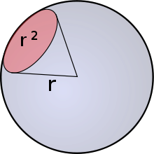图 -
与形状没有关系，只要面积一样，半径一样，立体角就一样。
-
目的是描述站在某一点的观察者看到的物体大小的尺度。 例如，在某观察点看到的远处的大物体可能与近处的小物体有相同的面积
-
以观测点为球心，构造一个单位球面；任意物体投影到该单位球面上的投影面积，就是该物体相对于该观测点的立体角。只要投影面积一样，半径一样，立体角就相等
-
面积的计算方式：
-
几何法：对于一个微元(曲面)矩形的面积=长×宽
-
宽=半径×天顶角=$r*dθ$
-
对于赤道上弧长=半径×方位角=$r*dφ$，但是不在赤道上的纬线对应的不是方位角（而且越往两极越小），可以将纬线段投影到赤道面上，再利用弧长公式：$r\cdot sinθ \cdot dφ$
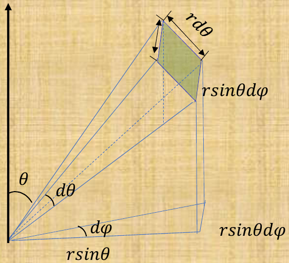所以，微元面积 $ds=r^2 sinθ \ dθ \ dφ$
立体角 $dΩ=\frac{ds}{r^2}=sinθ\ dθ\ dφ$
-
-
雅可比行列式
- 坐标系变换的尺度缩放系数
- 坐标系就是网格，坐标就是“等x线”与“等y线”的交点，
体积就是面积乘以厚度，所以
$$ \begin{array}{c} {\rm ds} = \frac{{\rm dV}}{{\rm dr}} = r^2\ \mathrm{sinθ\, dθ\, dφ} \\ {\rm dΩ} = \rm \frac{ds}{r^2} = sinθ\ dθ\ dφ \end{array} $$
-
-
立体角的积分
-
整个球的立体角：做闭曲面积分
$$ \begin{aligned} \oiint_S \mathrm{d}Ω &= \int_0^{2π}\int_0^π \mathrm{sinθ\, dθ\, dφ}\\ &= \int_0^{2π} 2 \mathrm{d}φ\ \\ &= 4π \end{aligned} $$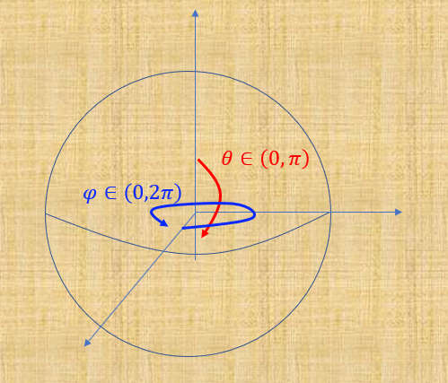所以，球的面积是 $4πr^2$
-
(+)场微分算符
- $$ \pmb{∇}=\frac{∂}{∂x}\pmb{i}+\frac{∂}{∂y}\pmb{j}+\frac{∂}{∂z}\pmb{k} $$
-
它具有矢量性质，一般可看作是个三维矢量
-
作用：两个矢量相乘是一个数，所以它乘上一个矢量场$\pmb{M(x)}$，得到一个标量场，也就是得到各点的散度；如果它乘上一个标量场，得到一个矢量场，就是各点的梯度，大小表示了变化率，方向是指向变化率最大的方向。
(+)散度
-
用场微分算符作用于矢量场得到一个标量场，这个标量场就是散度
-
物理意义是 矢量场在各点的净输出量
-
目的是：
-
对于矢量场 $\pmb{M(\pmb{x})}=M_x(x,y,z)\pmb{i}+M_y(x,y,z)\pmb{j}+M_z(x,y,z)\pmb{k}$ （三个方向的分量都是x,y,z的函数，空间位置不同，矢量就不同），其散度为：
$$ \begin{aligned} & {\rm div} \pmb{M} \\ &= \pmb{∇} \cdot \pmb{M} \\ &= (\frac{∂}{∂ x} \pmb{i},\ \frac{∂}{∂y} \pmb{j},\ \frac{∂}{∂z} \pmb{k})\cdot \left( M_x(x,y,z) \pmb{i},\ M_y(x,y,z) \pmb{j},\ M_z(x,y,z) \pmb{k} \right) \\ &= \frac{∂}{∂x}M_x(x,y,z) +\frac{∂}{∂y}M_y(x,y,z) +\frac{∂}{∂z}M_z(x,y,z) \end{aligned} $$就是对三个分量在各自的方向上求偏导，通过定义理解：比如对于一个小体积元(i,j)（无限分割离散化成边长为a的网格，前减后）:
$$ \begin{aligned} {\rm div} \pmb{M}(i,j,z) = \frac{M_x(i+1,j,z)-M_x(i-1,j,z)}{2a} +\frac{M_y(i,j+1,z)-M_y(i,j-1,z)}{2a} \\ +\frac{M_z(i,j,z+1)-M_z(i,j,z-1)}{2a} \end{aligned} $$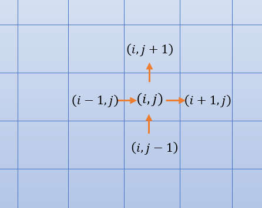所以，求某点 (i, j) 的散度就是求矢量场在 (i, j) 点的净输出量，对于电场，就是电场线的净输出量。
-
对一定体积内各点散度积分，等于表面各点散度的积分：因为体积元紧密排列，一个体积元的输出就是下一个体元的输入（$(x_n-x_{n-1})+(x_{n-1}-x_{n-2})+(x_{n-2}-x_{n-3})...+(x_2-x_1)=x_n-x_1$），所以整体看下来，就是头减尾，朝外的减朝内的（此思想还用于 牛顿莱布尼茨公式 $\int_a^bf(x)dx=F(b)-F(a)$ ）。
散度定理即为：连续可导的矢量场的封闭曲面的面积分等于该矢量场散度的体积分。
$$ \oiint_S \pmb{E}\ dS =\iiint_V \pmb{∇}\cdot\pmb{E}\ \mathrm{dV} $$如果包围区域内没有电荷，输入等于输出，散度为0.
高斯定律—微分形式
-
$ \pmb{∇}\cdot\pmb{E}=\frac{ρ(\pmb{x})}{ε_0} $
-
由库仑定律得到： $ \oiint_S\pmb{E}\cdot d\pmb{s} =\iiint_V \frac{ρ(x)}{ε_0}dV $
另外电场满足散度定理： $ \oiint_S\ \pmb{E}\cdot d\pmb{s} =\iiint_V \pmb{∇}\cdot\pmb{E}\ \mathrm{dV} $
所以： $ \iiint_V \pmb{∇}\cdot\pmb{E}\ \mathrm{dV} =\iiint_V \frac{ρ(x)}{ε_0}dV $ ，也即： $\pmb{∇}\cdot\pmb{E}=\frac{ρ(\pmb{x})}{ε_0}$ （上式对于任意区域都成立，如果将体积取无限小，即各个点也都成立）
-
说明了电场的散度只与局部的电荷密度有关（与其他位置电荷分布无关），再适配于边界条件，可以求出局部有限区域内的电场分布。
-
对于点电荷产生的电场：
$$ \pmb{E}=\frac{q}{4πε_0|\pmb{x}-\pmb{x'}|^3}(\pmb{x}-\pmb{x'}) $$将点电荷电荷密度$ρ(x)=qδ(x-x')$, 也带入高斯定律微分形式：
$$ \pmb{∇}\cdot\frac{\pmb{x}-\pmb{x'}}{|\pmb{x}-\pmb{x'}|^3}=4πδ(\pmb{x}-\pmb{x'}) $$平方反比的中心力场的散度除中心外为零，而在中心处的散度为无穷大，一般来说是个奇点，但是我们定义了 Dirac delta function 函数以后，就可以方便的表达出来。这个等式在电动力学里常常用到。
(e)无限长直线电荷
例一：均匀带电的无限长直线的线电荷密度为$λ$，求空间电场分布。
-
方法一：用库仑定律
库仑定律只能解对称性好的体系，因为求积分不一定能得到解析解
$$ \begin{aligned} E_r(r) &= \int_{-∞}^{+∞}\frac{λ dl}{4πε_0 R^2}cosθ \\ &= \int_{-π/2}^{π/2} \frac{λ d(r\cdot tanθ)}{4πε_0(r/cosθ)^2}cosθ & \text{(变成对$θ$积分)} \\ &= \int_{-π/2}^{π/2} \frac{λ r\frac{1}{cos^2θ}dθ}{4πε_0r^2\frac{1}{cos^2θ}}cosθ \\ &= \int_{-π/2}^{π/2} \frac{λ cosθ dθ}{4πε_0r} \\ &= \frac{λ}{4πε_0r}sin(\frac{π}{2})-sin(\frac{-π}{2})) \\ &= \frac{λ}{2πε_0r} \end{aligned} $$这里的$E_r(r)$不是矢量，因为它不只代表一个向量，而是空间中所有点
-
方法二：高斯定律的积分形式
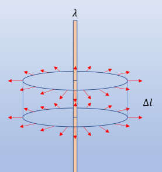$$ \begin{aligned} \oiint_S \pmb{E}\cdot d\pmb{s} &= E_r(r) 2πr Δl & \text{(点乘就是只看垂直分量)} \\ &= \frac{Δ q}{ε_0} \\ &= \frac{λ Δl}{ε_0} \end{aligned} $$所以：$E_r(r)=\frac{λ}{2πε_0r}$
(e)界面两侧有不同电场
界面两侧电场分别为 $E_1$ 和 $E_2$, 求界面的面电荷密度
取一微小立方体,做表面 $\pmb{E}\cdot d\pmb{s}$的积分。当厚度无穷小时 立方体侧面积分为零, 只剩下上下表面积分。
$$ \begin{aligned} \oiint_S \pmb{E}\cdot d\pmb{s} &= (\pmb{E_{1n}}-\pmb{E_{2n}})Δ s & \text{(n表示只取垂直于表面的分量)} \\ &= \frac{σ Δ s}{ε_0} &\text{(包住的电荷/介电常数)} \end{aligned} $$所以：$σ=ε_0 (\pmb{E_{1n}}-\pmb{E_{2n}})=ε_0(\pmb{E_1}-\pmb{E_2})\cdot \pmb{n_{12}}$ ，$\pmb {n_{12}}$表示从2指向1。
如何选取高斯面
首先对电场进行对称性分析；根据对称性选择合适的高斯面，以使场强在全部面上相等，或部分面上相等而其它面上通量为零；这就是原则。
比如球对称的电场，做球形高斯面这样保证面上的E都相等；柱对称、面对称的选的是圆柱形高斯面，这样做是为了让部分面上通量为零，部分面上E相等且作为常量提到积分号外面。 你看看大学物理电磁学上面的几个例题，点电荷的，带电球面，带电球体 无限大带电平面 无限长带电直线 等几个例题 选的高斯面就是根据这个来的
1.3 库伦定律与高斯定律非等价性
-
库伦定律能推出来高斯定律，但只有高斯定律推不出来库伦定律
-
从理论角度分析： $ \pmb{E}=\iiint_V \frac{ρ(\pmb{x'})}{4π ε_0 |\pmb{x}-\pmb{x'}|^3}(\pmb{x}-\pmb{x'})dV' $ 通过线性叠加、E沿径向（中心力场）、立体角（平方反比）可以推出高斯定律：$\pmb{∇}\cdot\pmb{E}=\frac{ρ(x)}{ε_0}$ 。
电场用球坐标表示需要 $r, θ, φ$，但是在推高斯定律时，只用到了 r，认为对$θ, φ$分布无依赖，但其实不然，比如电场线在球形区域内不是均匀分布：
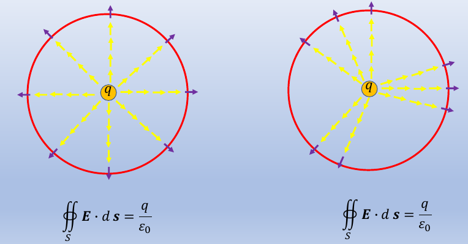库伦定律认为电场强度只与距离远近有关，认为r相同，场强就一样，但是其实球面上各点场强不一定一样。比如运动中的电荷产生的电场线如下图：
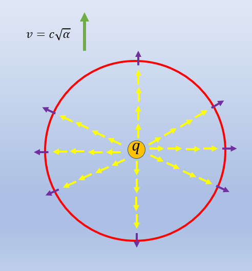运动方向沿着极轴方向,速度为 $c/\sqrt{a}$，这个的证明将会在狭义相对论的章节中论述，垂直于速度方向的电场比平行于速度方向电场大。而对于高斯定律，如果加一个角度修正，仍然可以描述这种电场。可以这么理解：有点地方电场线密集，有的地方电场线少，但是总量不变，散度也不变。比如给电场乘上一个与$θ, φ$ 有关的角度分布 $f(θ, φ)$ ：
$$ \pmb{E(x)}=\iiint_V\frac{f(θ,φ)ρ(\pmb{x'})}{4πε_0|\pmb{x}-\pmb{x'}|^3}(\pmb{x}-\pmb{x'})dV' $$只要满足: $\oiint_S\frac{f(θ,φ)}{4π}dΩ=1$
就满足高斯定律：
$$ \begin{aligned} \oiint_S \pmb{E(x)}\cdot d\pmb{s} &= \oiint_S\iiint_V\frac{f(θ,φ)ρ(\pmb{x'})}{4πε_0|\pmb{x}-\pmb{x'}|^3}(\pmb{x}-\pmb{x'})dV'd\pmb{s} \\ &= \oiint_S \frac{f(θ,φ)Q}{4πε_0|\pmb{x}-\pmb{x'}|^3}(\pmb{x}-\pmb{x'})d\pmb{s}\\ &= \oiint_S\frac{f(θ,φ)Q}{4πε_0}dΩ \\ &= \frac{Q}{ε_0} \end{aligned} $$当$f(θ,φ)=1$时，才是库伦定律的解。因而仅凭高斯定律推不出库伦定律。高斯定律的普适性更高。
-
从数值角度理解：
库伦定律说：如果能知道空间中所有点的电荷分布，就可以计算出空间电场分布的唯一解。那么，如果给出空间电荷分布，能否通过高斯定律得到空间电场的唯一解。高斯定律的微分形式是一个微分方程,我们可以分析其用有限元法能否得到唯一的解。
假定将一个立方体空间分成 $n^3$个网格,每个网格边长为 a, 每个网格电场有三个分量, 因而有 $3 n^3$ 个未知量, 由高斯定律$\pmb{∇} \cdot \pmb{E}=\frac{ρ(x)}{ε_0}$ ,可以得到在 $( i, j, k)$ 单元的（散度）方程：
$$ \begin{aligned} \frac{M_x(i+1,j,z)-M_x(i-1,j,z)}{2a} +\frac{M_y(i,j+1,z)-M_y(i,j-1,z)}{2a} \\ +\frac{M_z(i,j,z+1)-M_z(i,j,z-1)}{2a} \end{aligned} $$这样可以得到 $n^3$ 个方程，小于未知量个数$3n^3$，即便加上边界条件(在$n^2$量级)也远远不够，所以得不到唯一解。还需要其他微分方程来约束，才能得到库伦定律。
(+)梯度
-
场微分算符作乘以一个标量场(可以不写点号)，得到一个矢量场，就是标量场的梯度，就是标量场的变化率再加方向，方向是指变化率最大的方向
$$ \begin{aligned} \pmb{∇}φ(x,y,z) &= (\frac{∂}{∂x}\pmb{i} + \frac{∂}{∂y}\pmb{j} +\frac{∂}{∂z}\pmb{k})φ \\ &= \frac{∂φ(x,y,z)}{∂x}\pmb{i} +\frac{∂φ(x,y,z)}{∂y}\pmb{j} +\frac{∂φ(x,y,z)}{∂z}\pmb{k} \end{aligned} $$ -
有高有低就是梯度。三维空间用一个方程约束是一个面，等势面的切线方向，变化率是0，法向方向变化率最大
-
某个方向上的变化率，就是梯度乘上一个该方向的单位向量：$\pmb{n}\cdot\pmb{∇}φ(x,y,z)$
1.4 电势和泊松方程
-
某点的电势：就是从无穷远 $∞$ 处/参考点开始，将检验电荷移动到该点，电场力做的负功（E对路径积分的负值）：$φ(\pmb{r})=-\int_∞^r\pmb{E}\cdot dl$。
由点电荷产生的库伦场：$E=\frac{q}{4πε_0r^2}$的势函数为: $φ=\frac{q}{4πε_0r}$
-
电场是一个保守场，可以写成一个势函数$φ$的负梯度，在等势面上运动电场力不做功，等势面的法向方向就是电场方向：
$$ \pmb{E}=-\pmb{∇}φ $$ -
对于一维电场，$φ$的变化量 $dφ$ 除以长度 $dl$ 就是电场强度。对于三维空间，空间的导数是场微分算符 $\pmb ∇$
-
证明：任何一个静电场都可以写成势函数的梯度
$$ \begin{aligned} -\pmb{∇}\frac{q}{4πε_0r} &= -\frac{q}{4πε_0}\pmb{∇}\frac{1}{r} \\ &= -\frac{q}{4πε_0} (\frac{∂}{∂x} \pmb{i} +\frac{∂}{∂y}\pmb{j} +\frac{∂}{∂z}\pmb{k}) \frac{1}{\sqrt{x^2+y^2+z^2}} \\ &= \frac{q}{4πε_0} \frac{1}{(x^2+y^2+z^2)^\frac{3}{2}} (x\pmb{i}+y\pmb{j}+z\pmb{k}) \\ &= \frac{q}{4πε_0} \frac{\pmb{r}}{|\pmb{r}|^3} \end{aligned} $$ -
作用：配合高斯定律给出静电场的唯一解
-
实现：
-
把静电场强的电势形式，带入高斯定理，得到泊松方程：
$$ \pmb{∇}\cdot \pmb{E(x)}=\pmb{∇}\cdot\pmb{∇}φ(x)=\pmb{∇}^2φ(x) = \frac{ρ(x)}{ε_0} $$在$ρ(x)=0$ 区域，该方程变为：$\pmb{∇}^2φ(x)=0$，称为拉普拉斯方程
-
(+)拉普拉斯算符
-
$ \pmb{∇}^2=\pmb{∇}\cdot\pmb{∇}=\frac{∂^2}{∂ x^2}+\frac{∂^2}{∂ y^2}+\frac{∂^2}{∂ z^2} $
两个场微分算符（矢量）点乘，得到一个标量算符。
泊松方程与库伦定律等价
-
从数值角度：
如果从泊松方程（差分定义形式）能解出唯一解，就说明与库伦定律等价。
二阶导的差分方程：
$$
$$
还是画一个立方体，分成$n^3$个单元，每个单元边长为a，每个单元有一个未知量$φ(i,j,k)$，$φ$不是矢量所以总共只有$n^3$ 个未知量，每个点都可以写出一个泊松方程(与周围6格的关系)，也共有$n^3$个，似乎与未知量一致，但是对于表面上的点，与它相邻的点不够6个，写不出泊松方程，所以方程数量还是比未知数少。
$$ \begin{aligned} φ(i+1,\ j,\ k)+φ(i-1,\ j,\ k) +φ(i,\ j+1,k)+φ(i,\ j-1,\ k) \\ +φ(i,\ j,\ k+1)+φ(i,\ j,\ k-1)-6φ(i,j,k) \\ =-\frac{a^2}{ε_0}ρ(i,j,k) \end{aligned} $$根据定义看出，以 (i, j, k)为中心，与前后上下左右6个单元都有关系，但是对于表面上的点，与它相邻的点不够6个，就需要给出边界条件，边界条件是起点！内部只是差值关系，如果没有起点的话，不知从哪开始加起，还是无穷多解。
如果人为的给定边界点的电势值，或者给出边界点的电势与内部相邻一点电势的差，这样方程的数量就与未知量相等了，只能说可能有唯一的电势分布解，独立的解还要满足秩是 $n^3×n^3$，所有的方程需要是相互独立的。
-
从理论角度分析
唯一性定理：如果已知某一空间的第一类或者第二类边界条件，泊松方程就有唯一的解。
对边界另加的方程称为边界条件，分为两种：
- 第一类边界条件：边界上的电势$φ(x)_s$分布已知;
- 第二类边界条件：边界电势的法向导数 $\frac{∂φ(x)}{∂n}$ 分布已知，就是表面点和里面一点的差值
(+)两个标量场相乘的梯度
(+)标量场乘以矢量场的散度
(+)格林第一公式
-
对于任意两个连续可导的标量场$φ, \psi$ 有：
$$
$$
-
.
-
作用：它里面既包含了第一类边界条件，也包含了第二类边界条件
(+)唯一性定理的证明
- 假设：在特定的边界条件下,泊松方程有两个解：$φ_1$和$φ_2$，即满足： $$ \pmb{∇}^2φ_1=\pmb{∇}^2φ_2=-\frac{ρ(x)}{ε_0} $$
(+)矢量积
- $$ \pmb{a}×\pmb{b} = \begin{vmatrix}\pmb{i}&\pmb{j}&\pmb{k}\\a_x&a_y&a_z\\ b_x&b_y&b_z \end{vmatrix} = (a_yb_z-a_zb_y)\pmb{i}+(a_zb_x-a_xb_z)\pmb{j}+(a_xb_y-a_yb_x)\pmb{k} $$
-
几何意义：两向量矢量积的大小是构成的平行四边形的面积，方向垂直于两向量所在平面，右手定则
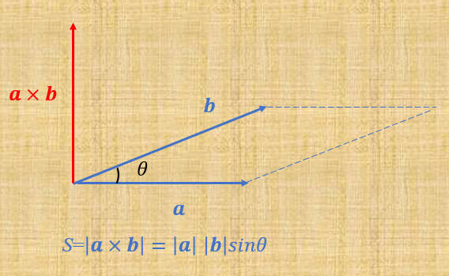 -
$\pmb{a}×\pmb{b}=-\pmb{b}×\pmb{a}$ （反交换律）
1.5 旋度
- $$ \begin{aligned} \pmb{∇}× \pmb{M}(x,y,z) &= \begin{vmatrix} \pmb{i}&\pmb{j}&\pmb{k} \\ \frac{∂}{∂ x}&\frac{∂}{∂ y}&\frac{∂}{∂ z}\\ M_x(x,y,z)&M_y(x,y,z)&M_z(x,y,z)\\ \end{vmatrix}\\ &= (\frac{∂ M_z}{∂y} - \frac{∂ M_y}{∂z}) \pmb{i} - (\frac{∂ M_z}{∂x} - \frac{∂ M_x}{∂z}) \pmb{j} + (\frac{∂ M_y}{∂x} - \frac{∂ M_x}{∂y}) \pmb{k} \end{aligned} $$
-
因为场微分算符具有矢量性质，所以也会联想到矢量与矢量场的叉积
-
先只分析一个 $\pmb{k}$ 方向上的旋度：
$$ (\frac{∂ M_y}{∂x}-\frac{∂ M_x}{∂y}) \pmb{k} $$也就是对于某个矢量场 $\pmb{M}(x,y,z)=(M_x(x,y,0),M_y(x,y,0),M_z=0)$, 没有z方向的分量，而且x分量，y分量也都与z无关，也就相当与把一个二维平面强行拉到了三维空间。 对于偏微分的理解方法就是离散化：
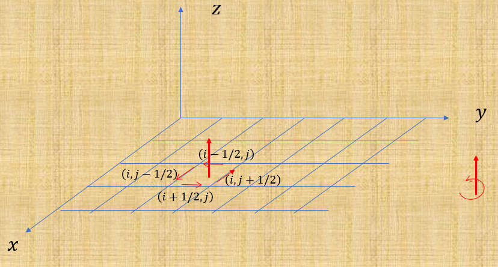图1.5.1 在 x 方向上取两格点： $(i-\frac{1}{2}, j)$ 和 $(i+\frac{1}{2}, j)$， 所以 $\frac{M_y(i+\frac{1}{2},\ j,\ 0)-M_y(i-\frac{1}{2},\ j,\ 0)}{1}$，就是 y 分量$M_y$ 在 x 方向上的变化率
在 y 方向上取两格点： $(i,\ j-\frac{1}{2})$和$(i,\ j+\frac{1}{2})$ ， 所以$\frac{M_x(i,\ j+\frac{1}{2},\ 0)-M_x(i,\ j-\frac{1}{2},\ 0)}{1}$ 就是 x 分量$M_x$ 在y方向上的变化率
这两个变化率相减，就是中间网格四周矢量的旋转程度，差得越大旋转越猛
或者只在y方向上有变化率(旋度)：$(\frac{∂ M_y}{∂ x}-0)\pmb{k}$ （只要有切向变化率就有旋度，而散度是法向变化率）
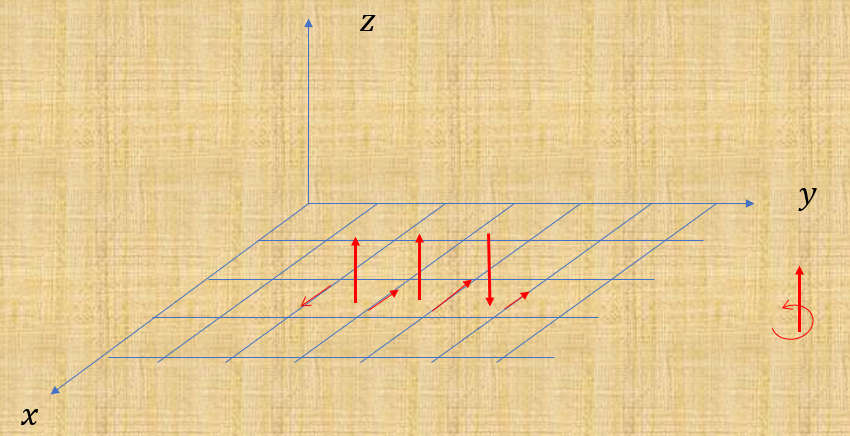切向有旋度：均匀场旋度为0 加上一个有旋场
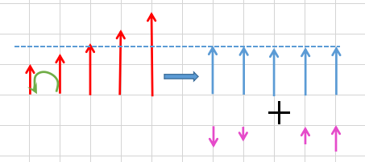对于二维中的场，y方向没有变化率，x方向有变化率，而且其旋度场是个匀强场：
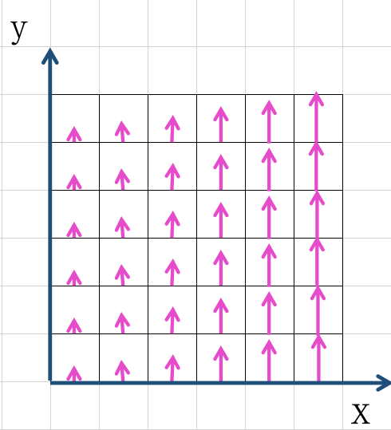不同的矢量场可以有着相同的旋度场，比如上图的场，绕z轴旋转45度，矢量场变化了，旋度场没变
(+)斯托克斯定理
-
矢量旋度的曲面积分等于矢量沿曲面一圈的环路积分
$$ \iint\pmb{∇}×\pmb{M}\cdot d\pmb{S} =\oint\pmb{M}\cdot d\pmb{l} $$点乘面元 相当于是求通量，所以也可以说是：旋度场通量的面积分，就是总的旋转量
-
和散度定理一样，内部的相邻点做差，加一次，减一次都抵消了，只剩下边界上的差了，这个差值的正方向也具有手性：
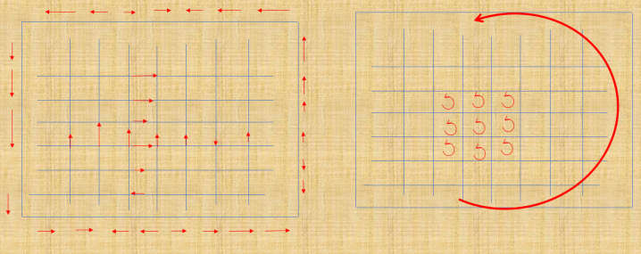
(+)保守场
-
如果一个矢量场能写成某势函数(标量场)的梯度形式，那么这个矢量场就是保守场。或者反过来，如果一个矢量场的旋度为0，这个矢量场就是保守场
-
证明：
-
先证明: 可以写成某个标量场的梯度形式的矢量场的旋度为零： $\pmb{M}=\pmb{∇}φ \Rightarrow \pmb{∇}×\pmb{M}=0$
因为 $\pmb{a}×\pmb{a}=0$，所以也容易验证$\pmb{∇}×\pmb{∇}=0$ (注意 $\frac{∂}{∂x}, \frac{∂}{∂ y}, \frac{∂}{∂ z}$ 三个算符的可对易性：$\frac{∂^2}{∂x∂y}-\frac{∂^2}{∂y∂x}=0$)，即任意标量场的梯度的旋度为零: $\pmb{∇}×\pmb{∇}φ=0$
-
然后再证明旋度为零的矢量场 可以写成某个标量场的梯度 形式。$\pmb{∇}×\pmb{M}=0 \Rightarrow \pmb{M}=\pmb{∇}φ$
根据斯托克斯定理：矢量散度曲面积分等于矢量环路积分 $\iint\pmb{∇}×\pmb{M}\cdot d\pmb{S}=\oint\pmb{M}\cdot d\pmb{l}=0$ , 从A点积到B点 等于 从B点到A点积分的负值，可得任意两点间的路径积分与路径无关，只与两点坐标有关
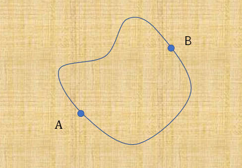根据这个关联在每个点定义一个数值，而两点间的数值差即为路径积分的值，这个数值场就是我们所要求的标量场 $\int_A^B \pmb{M}\cdot d\pmb{l}=φ(B)-φ(A)$
-
静电场的一些等价性
$$
$$
1.6镜像电荷法
- 将复杂的"外界"电荷分布转换成一种简单的外界电荷分布，使表面电势和内部电荷分布与原体系相同，就可以根据这个简单的体系求解电场。（“外界”和“内部”是对希望研究的体系而言）
- 根据唯一性定理：如果对于某空间，如果已知电荷空间分布，再适配于合适的边界条件（表面的电势分布或者表面电势的法向导数，就可以得到电势的唯一的解.
(e)平板感应
例：如图1.6.1，在无限大平面导体上方 d 位置有一电量为 q 的电荷，导体接地。求空间电场、导体表面感生电荷分布、电荷受力情况。
- 静电场中的导体都是等势体，体内和表面处处电势相等。
- 因为接地了所以导体的体内和表面电势都为0。体内也没有电场，否则有电势差会产生电场，电荷受电场力会运动，就不是“静"电场了，所有的电荷都在表面。
在导体上方有一正电荷q，因为感应，负电荷会从大地跑到导体表面。平衡后，各电荷都不动了，形成一个自我约束的面电荷密度$σ$。
现在不知道空间所有电荷分布，没法用库伦定律，或者说算起来很麻烦。
因为导体表面电势为0，如果在下半空间放一个等量负电荷，这样在导体表面位置电势也是0，上半空间的情况与原来保持一致，根据唯一性定理，这个正负点电荷对体系的解就是原来体系的解。
上半空间就是系统内部，导体表面就是系统边界；系统内部的电荷分布已知（点电荷q），边界上的电势也已知（0），有了第一类边界条件就可以求出唯一解）下半部分的电场和原来不一样（导体是等势体，接地了内部场强为0。
上半空间电势（满足线性叠加）：（正电荷和负电荷电势贡献叠加）
$$ \begin{aligned} φ(x,y,z) &= \frac{q}{4πε_0} \left[ \frac{1}{\sqrt{x^2+y^2+(z-d)^2}} -\frac{1}{\sqrt{x^2+y^2+(z+d)^2}} \right]\\ (轴对称)柱坐标形式： &= \frac{q}{4πε_0} \left[ \frac{1}{\sqrt{r^2+(z-d)^2}} -\frac{1}{\sqrt{r^2+(z+d)^2}} \right] \end{aligned} $$上半空间电场（电势梯度的负值）$z>=0$, 方向垂直表面向上：
$$ \begin{aligned} \pmb{E_z} &= -\pmb{∇}φ(r,z)\\ &= -\frac{∂}{∂ \rm{z}}φ(r,z)\\ &= -\frac{q}{4πε_0} \left[ \frac{z-d}{(\sqrt{r^2+(z-d)^2})^{\frac{3}{2}}} -\frac{z+d}{(\sqrt{r^2+(z+d)^2})^{\frac{3}{2}}} \right] \end{aligned} $$导体表面电场（z=0）：
$$ \pmb{E_z}|_{z=0} = -\frac{q}{4πε_0} \frac{2d}{(r^2+d^2)^{\frac{3}{2}}} $$导体表面面电荷密度：
根据高斯定理：$\oiint_s\pmb{E} \cdot d\pmb{s} = \frac{Q}{ε_0}$， 取高斯面，上下两面间距趋近0，而且导体内无电场，所以只有上面有电场通量，就有：
$$ \begin{aligned} \pmb{E} \cdot ΔS &= \frac{σ(r)ΔS}{ε_0} \\ σ(r) = ε_0 E_z|_{z=0} &= -\frac{q}{2π} \frac{d}{(r^2+d^2)^{\frac{3}{2}}} \end{aligned} $$电荷受力： 感生电荷在上半空间的电场与镜像电荷在上半空间的电场相同，所以电荷 q 所受力等同于 -q 点电荷对其的吸引力：
$$ F=\frac{q^2}{4πε_0(2d)^2} $$用高斯定理求电场强度：分别包住两个电荷，求电场再叠加。。。电场方向都是竖直的，
(e)导体球感应
例2：如图1.5.2，导体球外有一点电荷 $q$ ，坐标为 $(0, 0, a)$，导体球半径为 $R$，接地，分析空间电势分布、导体球表面感生电荷分布、电荷 q 受力情况。
镜像电荷与所研究体系“内部”电荷（$q$）的关系：两者贡献的电势叠加导致导体球表面电势处处为0（接地了）。根据唯一性定理可得，球外电场分布就等效于球外点电荷与镜像电荷产生的电场之和。
因为球是旋转对称的，故先假设镜像电荷 q’ 位于 z 轴上，球内的 $(0,0,b)$ 点处，则 M 点处的电势为：
$$ φ(M)=\frac{q}{4πε_0r_1}+\frac{q'}{4πε_0r_2}=0 $$整理得：$\frac{r_1}{r_2}=-\frac{q}{q'}$
如果$Δ$aOM $\sim$ $Δ$MOb 两三角形相似 ($θ$是公共角，若还有$∠aMO=∠MbO$ 就可得证)，则有$\frac{r_1}{r_2}=\frac{R}{b}=\frac{a}{R}(常数)$，所以 $q'=-\frac{R}{a}q$ 以及 $b=\frac{R^2}{a}$。$r1, r2$ 可用余弦定理求出。
球外任一点的电势，如 (b) 图：
$$ \begin{aligned} φ(r,θ,φ) &= \frac{q}{4πε_0r_1}+\frac{q'}{4πε_0r_2} \\ &= \frac{q}{4πε_0}\left(\frac{1}{\sqrt{r^2+a^2-2racosθ}} +\frac{-\frac{R}{a}}{\sqrt{r^2+b^2-2rbcosθ}}\right) \\ &= \frac{q}{4πε_0}\left(\frac{1}{\sqrt{r^2+a^2-2racosθ}} +\frac{-\frac{R}{a}}{\sqrt{r^2+(\frac{R^2}{a})^2-2r\frac{R^2}{a}cosθ}}\right) \end{aligned} $$球面上电场分布（因球面是等势面，在等势面上运动电场力不做功，故电场方向都沿径向. 只对 $r$ 求偏导，$E$与$θ,ϕ$无关）：
$$ \begin{aligned} E_n &= -\pmb{∇}φ(r,θ,ϕ)|_{r=R}\\ &= -\frac{∂}{∂ r}φ(r,θ,ϕ)|_{r=R}\\ &= -\frac{q}{4πε_0R^2}\left(\frac{a}{R}\right) \frac{1-(\frac{a}{R})^2} {\left(1+(\frac{a}{R})^2-2\frac{a}{R}cos(θ)\right)^\frac{3}{2}} \end{aligned} $$球面上电荷分布（高斯面只围一个小面元，因为导体球内部无电场，只有一面有通量，所以$\pmb{E_n}\cdotΔ S=\frac{σ(θ,φ)Δ S}{ε_0}$）
$$ \begin{aligned} σ(θ,φ) &= ε_0 \pmb{E_n}|_{r=R} \\ &= -\frac{q}{4π R^2} \left(\frac{a}{R}\right) \frac{1-(\frac{a}{R})^2} {\left(1+(\frac{a}{R})^2-2\frac{a}{R}cos(θ)\right)^\frac{3}{2}} \end{aligned} $$可以分析出：随着 $a/R$ 的减小，球外点电荷越来越集中在球的顶部。当 $a/R$ 趋近于1时，球外点电荷与镜像电荷到球表面的距离相等，与平面导体镜像电荷结果一致。这是因为球面点电荷非常靠近表面，等价于球体半径无穷大，点电荷所看到的平面近似为平面。
可以分别用表面感生电荷积分计算感生电荷总量、用表面感生电荷对 q 的引力积分算出 q 所受的引力，会发现结果与高斯定理和镜像电荷的库伦力是一致的。并且可以看到感生电荷电量小于原电荷电量，所以电荷 q 所产生的电场线并不是全部进入导体球表面，有一部分走向无穷远。
(e)导体球带电
例3：将上面例2中的导体球壳不接地，带电量为$Q_s$，外部有个点电荷q，求球外电势分布和电荷分布。
把球的整个带电量看作两部分： 一部分是感生电荷 $q' = -\frac{R}{a}q$，剩余一部分是 $Q_s-(-\frac{R}{a}q)$。 感生电荷等效为镜像电荷使球面上电势为0。 由于静电场中导体是等势体，所以第二部分电荷应该在球面上均匀分布，使球面上各点场强相等，在球表面贡献的电势也相等，才是等势体。
在球面均匀分布的电荷所产生的场强，对外部而言，等效于所有电荷集中与球心，所以第二部分电荷对球外贡献的电势分布为：
$$ \frac{Q+\frac{Rq}{a}}{4πε_0r} $$球外电势分布是三部分电荷（球外电荷+感生电荷+剩余电荷）贡献的电势叠加：
$$ \begin{aligned} φ(r,θ,ϕ) &= \frac{q}{4πε_0r_1} +\frac{q'}{4πε_0r_2} +\frac{Q+\frac{Rq}{a}}{4πε_0r}\\ &= \frac{1}{4πε_0} \left( \frac{q}{\sqrt{r^2+a^2-2racosθ}} +\frac{-\frac{Rq}{a}} {\sqrt{r^2+(\frac{R^2}{a})^2-2r\frac{R^2}{a}cosθ}} +\frac{Q+\frac{Rq}{a}}{r} \right) \end{aligned} $$(e)导体球带φ
例4：将例2中的球改为不接地，而是有一个表面电势$φ_s$（可以认为接了一个电池），求球外电势分布和电荷分布。
将球面上电势看作两部分：
- 一部分电势由球面上的感生（镜像）电荷贡献，与球外点电荷贡献的电势叠加会使球面上电势为0；
- 球面上多余的电势 $φ_S$ 是由球面上额外均匀分布的电荷贡献。
电势与电荷的关系为：$φ=\frac{q}{4πε_0r}$，现在已知在 $r=R$ 处由额外均匀分布电荷贡献的电势为 $φ_S$，根据电势与距离 $r$ 成反比 $\frac{φ}{φ_S}=\frac{R}{r}$，所以球面额外均匀分布电荷在 $r$ 处贡献的电势为：$φ=\frac{R\ φ_S}{r}$
球外空间电势是三部分：球外点电荷 $q$ 贡献的电势 与 感应电荷贡献的电势 与 球面额外均匀分布电荷贡献的电势 的叠加：
$$ φ(r,θ,ϕ)= \frac{q}{4πε_0} \left( \frac{1}{\sqrt{r^2+a^2-2racosθ}} +\frac{-\frac{R}{a}} {\sqrt{r^2+(\frac{R^2}{a})^2-2r\frac{R^2}{a}cosθ}} \right) +\frac{φ_S R}{r} $$(e)球壳包电荷
例5：导体球壳内部有一点电荷 $q$，到球心距离为 $a$，导体球内径为 $R$，外径为 $R'$，球壳接地，分析空间电势分布、导体球壳内面感生电荷分布，电荷 $q$ 受力情况。
球壳内表面上产生了等量的感应电荷 $-q$，然后用高斯面只包围内壁，没有电通量，所以对外的电场为0。 因为接地，球壳电势为0。
对球壳内部体系分析：这时“体系内部”的电荷分布已知 (为$q$)，体系表面电势指的是内表面上的电荷分布，情况比较复杂，需要找一个镜像电荷来使内壁上电势为0。构造方法与例2相同：
- 内壁电势为0：$\frac{r_1}{r_2} = -\frac{q}{q'}$
- $ΔAOM \sim ΔMOB$ ：$\frac{r_1}{r_2} = \frac{a}{R} = \frac{R}{b}$
所以 $q'=-\frac{R}{a}q$，$b=\frac{R^2}{a}$ .
壳内空间电势 (r<R) 等于球内点电荷贡献的电势与内壁感生电荷贡献的电势之和：
$$ \begin{aligned} φ(r,θ,ϕ) &= \frac{q}{4πε_or_1} +\frac{-\frac{R}{a}q}{4πε_0r_2} \\ &= \frac{q}{4πε_0} \left( \frac{1}{\sqrt{r^2+a^2-2racosθ}} -\frac{\frac{R}{a}}{\sqrt{r^2+b^2-2rbcosθ}} \right)\\ &= \frac{q}{4πε_0} \left( \frac{1}{\sqrt{r^2+a^2-2racosθ}} -\frac{\frac{R}{a}}{\sqrt{r^2+(\frac{R^2}{a})^2-2r\frac{R^2}{a}cosθ}} \right) \end{aligned} $$导体球内表面电势为零，导体为等势体，则球壳从内到外电势均为零，所以其它位置没有电荷，感应电荷均在内表面，球外电势也为零。
(h)球壳带电
将例5条件改为球壳带总电量$Q$，求全空间电势分布。
将总电荷看作两部分：
- 一部分是内表面上的感应电荷 $q'$（等效球壳外镜像电荷）；
- 剩余部分电荷 $Q-(-\frac{R}{a}q)$均匀分布在外表面（因为导体是等势体，如果分布在内表面，体内就不等势了），这一部分电荷贡献的电势为$\frac{Q+\frac{Rq}{a}}{4πε_0r}$ 。
壳内外空间电势等于 壳内电荷q贡献的电势+感应电荷贡献的电势+外表面均匀分布电荷贡献的电势：
$$ \begin{aligned} φ(r,θ,ϕ) &= \frac{q}{4πε_or_1} +\frac{-\frac{R}{a}q}{4πε_0r_2} +\frac{Q+\frac{Rq}{a}}{4πε_0r} \\ &= \frac{1}{4πε_0} \left( \frac{q}{\sqrt{r^2+a^2-2racosθ}} -\frac{\frac{Rq}{a}}{\sqrt{r^2+(\frac{R^2}{a})^2-2r\frac{R^2}{a}cosθ}} +\frac{Q+\frac{Rq}{a}}{r} \right) \end{aligned} $$(h)球壳带$φ$
将例5条件改为球壳电势为$φ_S$，求全空间电势分布。
球壳是等势体，内表面、体内和外表面电势相等, 都是$φ_S$
导体球壳的电势看作由两部分电荷叠加而来：一部分是感应电荷贡献的电势与壳内电荷贡献的电势叠加，使导体电势为0；球壳剩下的电势$φ_S$都是由外表面上均匀分布的电荷贡献的。根据电势与距离r成反比，表面均匀分布电荷看作全部电荷集中于球心，对外部电势贡献为：$\frac{R}{r}φ_S$
壳内外空间电势等于 壳内电荷q贡献的电势 + 感应电荷贡献的电势 + 外表面均匀分布电荷贡献的电势:
$$ φ(r,θ,φ)= \frac{q}{4πε_0} \left( \frac{1}{\sqrt{r^2+a^2-2racosθ}} -\frac{\frac{R}{a}}{\sqrt{r^2+(\frac{R^2}{a})^2-2r\frac{R^2}{a}cosθ}}\right) +\frac{φ_SR}{r} $$(h)导体夹电荷
两无限大平面导体平行放置，导体接地，中央位置有一个电荷 q，电荷距上下导体表面距离都为 d 。求空间电势分布。
q 在上方导体表面附近感应出的电荷看作: 在关于表面对称位置处，带电量为 $q_1'=-q$ 的镜像电荷，使导体表面电势为0。$q_1'$对夹缝空间贡献的电势：$\frac{-q}{4πε_0(d+x)}$，x 是到上表面的距离。夹缝空间电场方向都垂直于导体表面。
q 在下方导体表面附近感应出的电荷看作 $q_1''=-q$ 的镜像电荷。$q_1''$ 对夹缝空间某点贡献的电势：$\frac{-q}{4πε_0(d+(2d-x))}=\frac{-q}{4πε_0(3d-x)}$
$q_1''$ 在上方导体表面感应出的电荷看作 $q_2'=-q$ 的镜像点电荷。$q_2'$对夹缝空间某点贡献的电势：$\frac{-q}{4πε_0(3d+x)}$
$q_1'$ 在下方导体表面感应出的电荷看作 $q_2''=-q$ 的镜像点电荷。$q_2''$对夹缝空间某点贡献的电势：$\frac{-q}{4πε_0(5d-x)}$
$q_2''$ 在上方导体表面感应出的电荷看作 $q_3'=-q$ 的镜像点电荷。$q_3'$对夹缝空间某点贡献的电势：$\frac{-q}{4πε_0(5d+x)}$
$q_2'$ 在下方导体表面感应出的电荷看作 $q_3''=-q$ 的镜像点电荷。$q_3''$对夹缝空间某点贡献的电势：$\frac{-q}{4πε_0(7d-x)}$
…
夹缝空间某点电势为：$-\frac{q}{4πε_0}\sum_{n=1}^∞ (\frac{1}{nd+x}+\frac{1}{(2n+1)d+x})$
(h)第一象限有电荷
二维坐标系，在第一象限的 $(x_0,y_0)$ 点处有一电荷 q，其它三个象限都是金属导体接地，求第一象限电势分布。
电荷q在第四象限感应出了电荷，看作$q'=-q$ 的镜像电荷。$q'$对第一象限(x,y)贡献的电势：$\frac{-q}{4πε_0\sqrt{(x-x_0)^2+(y+y_0)^2}}$ ，
q和q’ 以y轴为界面，使第二和第三象限产生感应电荷，对第一象限(x,y)点贡献的电势分别为：$\frac{-q}{4πε_0\sqrt{(x+x_0)^2+(y-y_0)^2}}$和$\frac{-q}{4πε_0\sqrt{(x+x_0)^2+(y+y_0)^2}}$
第一象限的电势分布：$\frac{q}{4πε_0\sqrt{(x-x_0)^2+(y-y_0)^2}}+ \frac{-q}{4πε_0\sqrt{(x-x_0)^2+(y+y_0)^2}}+\frac{-q}{4πε_0\sqrt{(x+x_0)^2+(y-y_0)^2}}+\frac{-q}{4πε_0\sqrt{(x+x_0)^2+(y+y_0)^2}}$
(h)半球突起
如图所示,无限大导体平板,有一半圆导体突起,导体接地。半圆上方 d 处有一电量为 q 的点电荷, 求导体上部空间电势分布
q 在球内 感应出$q'=-\frac{R}{d}q$ 电荷
$q'$ 在平板内 感应出 $q''=-q'=\frac{R}{d}q$，
$q$ 在 平板内感应出 $q'''=-q$ ，
在导体上方，距离球心 r 处的电势为：
$$ \begin{aligned} φ(r,θ,φ) &= \frac{q}{4πε_0r_1} +\frac{q'}{4πε_0r_2} +\frac{q''}{4πε_0r_3} +\frac{q'''}{4πε_0r_4}\\ &= \frac{q}{4πε_0} \left( \frac{1}{\sqrt{d^2+r^2-2drcosθ}} +\frac{-\frac{R}{d}}{\sqrt{(\frac{R^2}{a})^2+r^2-2(\frac{R^2}{a})rcosθ}}\right.\\ &\qquad\qquad\qquad\left. +\frac{\frac{R}{d}}{\sqrt{(\frac{R^2}{a})^2+r^2+2(\frac{R^2}{a})rcosθ}} -\frac{1}{\sqrt{d^2+r^2+2drcosθ}} \right) \end{aligned} $$(+)正交性
-
对于一组基矢，任意两个基矢（不包括自己和自己）的内积都是0.
-
目的是一组正交基矢可以将空间任一向量唯一的表示出来。
-
“竖着乘，横着加”
-
二维平面，两个互相垂直的基矢
$$ \begin{pmatrix} \pmb{a_1}\ \pmb{a_2} \end{pmatrix}
\begin{pmatrix} a_{11},\ a_{12}\ a_{21},\ a_{22} \end{pmatrix} $$
垂直内积为0：$\pmb{a_1}\cdot\pmb{a_2}=a_{11}a_{21}+a_{12}a_{22}=0$
-
三维基矢： $$ \begin{pmatrix} \pmb{a_1}\\pmb{a_2}\\pmb{a_3} \end{pmatrix}
\begin{pmatrix} a_{11},\ a_{12},\ a_{13}\a_{21},\ a_{22},\ a_{23}\ a_{31},\ a_{32},a_{33} \end{pmatrix} $$
任意两个向量内积为0：$\pmb{a_i}\cdot\pmb{a_j}=\sum_{K=1}^{3}a_{ik}a_{jk}=0 \quad i\neq j$
-
n维：
$$ \begin{pmatrix} \pmb{a_1}\\pmb{a_2}\ \vdots\ \pmb{a_n} \end{pmatrix}
\begin{pmatrix} a_{11} & a_{12} & \cdots & a_{1n} \ a_{21} & a_{22} & \cdots & a_{2n} \ \vdots & \vdots & \ddots & \vdots \ a_{n1} & a_{n2} & \cdots & a_{nn} \ \end{pmatrix} $$
任意两个基矢内积为0：$\pmb{a_i}\cdot\pmb{a_j}=\sum_{K=1}^{n}a_{ik}a_{jk}=0 \quad i\neq j$
-
无限维
$$ \begin{pmatrix} \pmb{a_1} \ \pmb{a_2}\ \vdots\ \end{pmatrix}
\begin{pmatrix} a_{11} & a_{12} & a_{12} & \cdots \ a_{21} & a_{22} & a_{23} &\cdots \ a_{31} & a_{32} & a_{33} &\cdots \ \vdots & \vdots & \vdots &\vdots \end{pmatrix} $$
任意两个基矢内积为0：$\pmb{a_i}\cdot\pmb{a_j}=\sum_{K=1}^{+∞}a_{ik}a_{jk}=0 \quad i\neq j$
-
函数：$\begin{pmatrix} f_1(x) \\ f_2(x) \\ f_3(x) \\ \vdots \end{pmatrix}$
正交满足任意两函数内积为0：$\int_{a}^{b} f_i(x)f_j(x)=0$ (求积分是因为在横着方向上连续, a到b表示在一段区间上满足，也可以是$(-∞,+∞)$)
(+)归一性
- 各基矢的模长都为1，也就是各基矢自己乘自己为1
- 目的是乘上基矢之后没有系数
- 二维：$\pmb{a_i}\cdot\pmb{a_i} = a_{i1}^2+a_{i2}^2=1$
- 三维：$\pmb{a_i}\cdot\pmb{a_i} = \sum_{K=1}^{3}a_{ik}^2=1$
- n维：$\pmb{a_i}\cdot\pmb{a_i} = \sum_{K=1}^{n}a_{ik}^2=1$
- 无限维：$\pmb{a_i}\cdot\pmb{a_i} = \sum_{K=1}^{+∞}a_{ik}^2=1$
- 函数(一个方向上是一个函数)：$\int_a^b f_i(x)f_i(x)dx = 1$
(+)完备性
-
一组基矢正好足够（不能多也不能少）唯一地表示空间任一向量
-
对于二维空间，需要有2个线性无关基矢；对于三维空间，需要有3个线性无关基矢；对于无穷维的空间需要无穷个线性无关基矢。
-
如何证明一个矩阵具有完备性呢？只要满足任意两列做“内积”等于0, 并且一列的平方和(模长, 自己乘自己)为1
$$ \sum_{k=1}^{n}a_{ki}a_{kj}=δ_{ij}= \begin{cases} 0,\ i\neq j &正交性（自己成别人） \\ 1,\ i=j &\text{归一性（自己乘自己）} \end{cases} $$ -
满足“正交归一”自动满足“完备”？（正交矩阵：横着乘竖着加等于竖着乘横着加） -
二维基矢：
$$ \begin{pmatrix} \pmb{a_1}\\ \pmb{a_2} \end{pmatrix}= \begin{pmatrix} a_{11},\ a_{12}\\a_{21},\ a_{22} \end{pmatrix} $$具有完备性则满足：$a_{11}a_{12}+a_{21}a_{22}=0$
-
三维基矢：
$$ \begin{pmatrix} \pmb{a_1} \\ \pmb{a_2} \\ \pmb{a_3} \end{pmatrix}= \begin{pmatrix} a_{11},\ a_{12},\ a_{13} \\ a_{21},\ a_{22},\ a_{23} \\ a_{31},\ a_{32},a_{33} \end{pmatrix} $$具有完备性则满足：$\sum_{k=1}^{3}a_{ki}a_{kj}=0,\ i\neq j$ 和 $\sum_{k=1}^{3}a_{ki}a_{ki}=1$
-
无限维：
$$ \begin{pmatrix} a_{11} & a_{12} & a_{12} & \cdots \\ a_{21} & a_{22} & a_{23} &\cdots \\ a_{31} & a_{32} & a_{33} &\cdots \\ \vdots & \vdots & \vdots &\vdots \end{pmatrix} $$具有完备性则满足：$\sum_{k=1}^{+∞}a_{ki}a_{kj}=0,\ i\neq j$ 和 $\sum_{k=1}^{+∞}a_{ki}a_{ki}=1$
-
每一方向是连续函数
$$ \begin{pmatrix} f_1(x) \\ f_2(x)\\ f_3(x) \\ \vdots \end{pmatrix} $$具有完备性则满足：$\sum_{k=1}^{+∞} f_k(x_i)f_k(x_j)=0,\quad x_i\neq x_j$ （求和是因为在竖着方向上是离散的）
1.7 正交完备函数集
-
用这一函数集的所有函数的线性组合来表示空间中的任意函数
-
每个函数表示了在一个方向上的投影“程度 权重”，如果少一维就不能完全反映向量在空间中情况。
-
解偏微分方程就是在找一组具有正交性和完备性的解（基函数）这样任何一个解都可以分解成这些基函数的线性叠加。
-
计算基函数的系数就是正交函数的展开：
比如对于二维空间，求系数$α_1,α_2$ 就是将 向量b 投影到各个基矢上。要证明的话，就把$α_1,α_2$代入，而且要注意是矢量加法。
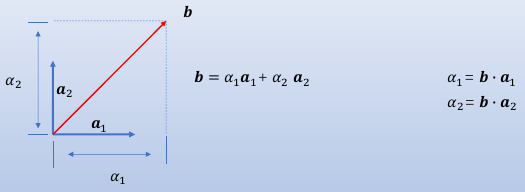对于每个方向都是函数的空间：也是将g(x)投影到一个方向上，不过两个函数点乘就应该是积分了（x方向上连续）
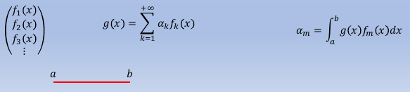$$ \begin{aligned} a_m &=\int_a^b g(x)f_m(x)dx\\ &=\int_a^b(\sum_{k=1}^{+∞}a_kf_k(x))f_m(x)dx\\ &=\int_a^b a_k dx\\ &=(b-a)a_k \end{aligned} $$怎么证明？
1.8 分离变量法-直角坐标
-
将偏微分方程变成常微分方程求解
-
$φ(x,y,z)$是三维空间的函数，对它求导需要在三个方向上求偏导， 如果三个分量是独立的（x与y，与z无关…），则$φ$可以写成：
$$ φ(x,y,z)=X(x)Y(y)Z(z) $$代入拉普拉斯方程：
$$ \pmb{∇}^2φ(x,y,z)= Y(y)Z(z)\frac{∂^2}{∂ x^2}X(x) +X(x)Z(z)\frac{∂^2}{∂ y^2}Y(y) +X(x)Y(y)\frac{∂^2}{∂ z^2}Z(z)=0 $$等式两边都除以$X(x)Y(y)Z(z)$：
$$ \frac{1}{X(x)}\frac{∂^2}{∂ x^2}X(x) +\frac{1}{Y(y)}\frac{∂^2}{∂ y^2}Y(y) +\frac{1}{Z(z)}\frac{∂^2}{∂ z^2}Z(z)=0 $$如果每一项都是一个常数：
也就是：$λ_1+λ_2+λ_3=0$
那么只要解3个常微分方程：$\frac{1}{X(x)}\frac{∂^2}{∂ x^2}X(x)=λ_1$ 就能解出$X(x),Y(y),Z(z)$
可以写成：$\frac{d^2}{dx^2}X(x)=X(x)λ_1$ ，根据$λ_1$的正负不同，$X(x)$的形式不同
什么函数求二次导还有它本身？指数函数$e^x$和三角函数 (多个负号)。
- 三角函数求二阶导后会多一个负号，所以 $λ_1<0$时，$X(x)$一定是一个三角函数（cos和sin都满足，乘个常数也满足）；
- 而$λ_1>0$时，$X(x)$ 一定是一个指数函数（$e^{x}$和$e^{-x}$都满足，乘个常数也满足）；
- $λ_1=0$时，X(x) 最多是一次函数。
所以三种解的形式为：
$$ \begin{aligned} λ_1<0,\ & X(x)=C_1cos(\sqrt{-λ_1}x)+C_2sin(\sqrt{-λ_2}x) ,\ddot{X(x)}=λ_1(C_1cos\sqrt{-λ_1}x+C_2sin(\sqrt{-λ_2}x))\\ λ_1>0,\ &X(x)=C_1e^{\sqrt{λ_1}x}+C_2e^{-\sqrt{λ_1}x} \qquad (它的二阶导：λ_1(C_1e^{\sqrt{λ_1}x}+C_2e^{-\sqrt{λ_1}x})) \\ λ_1=0,\ &X(x)= Ex+D \qquad \qquad \qquad\quad\ (它的二阶导为：0)\\ \end{aligned} $$对于$λ_1<0$，在复空间里，可以写成：$\sqrt{λ_1}=\sqrt{-λ_1}i$ 。根据欧拉公式，三角函数形式的解也可以写成指数为纯虚数的指数函数：
$$ \begin{aligned} X(x) &= C_1 exp(\sqrt{-λ_1}ix)+C_2exp(-\sqrt{-λ_1}ix)\\ &= C_1(cos(\sqrt{-λ_1}x)+isin(\sqrt{-λ_1}x)) +C_2(cos(\sqrt{-λ_1}x)-isin(\sqrt{-λ_1}x))\\ &= (C_1+C_2)cos(\sqrt{-λ_1}x)+i(C_1-C_2)sin(\sqrt{-λ_1}x) \end{aligned} $$既然是在复空间内，用3个复数代表3项：
$$ \begin{aligned} \frac{1}{X(x)}\frac{∂^2}{∂ x^2}X(x)&=-k_x^2 \\ \frac{1}{Y(y)}\frac{∂^2}{∂ y^2}Y(y)&=-k_y^2 \\ \frac{1}{Z(z)}\frac{∂^2}{∂ z^2}Z(z)&=-k_z^2 \\ \end{aligned} $$对于$\pmb{∇}^2φ=0$，就满足$k_x^2+k_y^2+k_z^2=0$ ，对应的解为：
$$ \begin{aligned} φ(x,y,z) &= X(x)Y(y)Z(z)\\ &= e^{k_xix}\cdot e^{k_yiy}\cdot e^{k_ziz} \\ &= Ae^{i(k_xx+k_yy+k_zz)}\\ \end{aligned} $$$k_x,k_y,k_z$这三个里面有实数（正）就有纯虚数（负），才能等于0（或者3个都是0）。如果 k 是实数 (即$k^2$为正，$-k^2$为负)，对应项就表示“沿这个方向正弦/余弦振荡传播”；如果 k 是纯虚数 (即$k^2$为负，$-k^2$为正)，对应项就表示“在这个方向上指数衰减/增强”。
(e)一维无限深势阱
一端开口的无限长的槽, 底面边长为 a,电势为 V,两侧电势为 0,求槽内电势分布$φ(x,z)$。
根据泊松方程：$\pmb{∇}^2φ=\frac{ρ(\pmb{x})}{ε_0}$，阱内无电荷所以是拉普拉斯方程：$\pmb{∇}^2φ=0$。猜这个方程的解的形式：
- 没有y方向，只有x和z方向：$φ(x,z)$
- 在z方向上是无穷远，电势趋近于0，所以 $k_z$ 是纯虚数，表示指数衰减$e^{ik_zz}$；那么kx一定是实数（因需满足$k_x^2+k_z^2=0$）所以在x方向上是正弦余弦振荡。
- 因为阱的两端电势为0，驻波？，所以应该是sin函数，m=a时表示$π$的整数倍：$sin(\frac{mπ}{a} x)$
- 既然$k_x=\frac{mπ}{a}$，那么$k_z=\frac{mπ}{a}{i}$ ，所以指数项为：$exp(ik_zz)=exp(-\frac{mπ z}{a})$
根据边界条件可以猜测解的形式为：
$$ \begin{aligned} φ(x,z) &= X(x)Z(z)\\ &= \sum_{m=0}^{+∞} \left( A_m sin\left(\frac{mπ x}{a}\right)exp(-\frac{mπ z}{a}) \right) \end{aligned} \tag{1} $$根据边界条件$φ(x,0)=V$ 有：
$$ φ(x,0) = \sum_{m=0}^{+∞}A_msin(\frac{mπ}{a}x)=V \tag2 $$对于正交完备的空间，求函数 $g(x)=\sum_{k=1}^{+∞}a_kf_k(x)$ 的各维的系数：g(x)乘上对应维函数对x求积分 $a_m=\int_a^bg(x)f_m(x)dx$
$$ \begin{aligned} &\int_0^a φ(x,0)\cdot sin(\frac{mπ}{a}x)dx\quad (m=1,2,\cdots)\\ &=\int_0^a\left(\sum_{m=0}^{+∞}A_msin(\frac{mπ}{a}x)\right)sin(\frac{mπ}{a}x)dx \\ &=\int_0^a A_msin^2(\frac{mπ x}{a})dx & \text{正交：自己乘别人=0}\\ &=A_m\int_0^a\left(\frac{1-cos(\frac{2mπ x}{a})}{2} \right)dx &\text{但不归一! 自己乘自己的积分是a/2} \\ &=A_m\left[\left(\frac{x}{2}-\frac{a}{4mπ x}sin(\frac{2mπ x}{a})\right)\bigg|_0^a \right] \\ &=\frac{a}{2}A_m \end{aligned} $$因为三角函数系不归一，所以求出的”系数“不是Am，还多个系数 a/2。上面的操作可以理解为是对方程(2) 左边进行的一系列计算，同样应要对方程右边做同样运算：乘上$sin(\frac{mπ x}{a})$然后对x积分，则方程2 变为：
$$ \begin{aligned} \frac{a}{2}A_m &= \int_0^a V sin(\frac{mπ x}{a})dx \\ A_m&=\frac{2}{a}\int_0^a Vsin(\frac{mπ x}{a})dx\\ A_m&=\begin{cases} \frac{4V}{mπ},&\text{m为奇数}\\ 0，&\text{m为偶数} \end{cases} \end{aligned} $$所以电势分布为：
$$ φ(x,z)=\frac{4V}{π}\sum_{m为奇数}\frac{1}{m}sin(\frac{mπ x}{a})e^{\frac{-mπ z}{a}} $$(e)二维封闭腔
例2：将例 1 的条件改为高度为有限值 b，顶边电势也为 0，如图。求腔体内的电势分布。
z 方向仅靠衰减不一定到上边界能减到0，所以z方向还要再加一个指数衰减项，使得顶部的电势为0。解的形式可写成：
$$ φ(x,z)=\frac{4V}{π}\sum_{m=1}^{+∞}\frac{1}{m}sin(\frac{mπ x}{a})[B_me^{-\frac{mπ z}{a}}+C_me^{\frac{mπ z}{a}}] $$当z=0时，要求：
$$ φ(x,0)=\frac{4V}{π}\sum_{m=1}^{+∞}\frac{1}{m}sin(\frac{mπ x}{a}) $$则：$B_m+C_m=1$
当z=b 时，要求：$φ(x,b)=0$，
则：$B_me^{-\frac{mπ b}{a}}+C_me^{\frac{mπ z}{a}}=0$
从而得到解Bm和Cm的方程组：
$$ \begin{cases} B_m+C_m=1 \\ B_me^{-\frac{mπ b}{a}}+C_me^{\frac{mπ z}{a}}=0 \end{cases} $$解得：
$$ \begin{cases} B_m= \\ C_m= \end{cases} $$(e)三维长方体
例3：现在我们考虑二维的情况,一个长方体腔,边长分别为 a,b,c,底面电势分布为 V(x , y),其余五个面的电势为零。
同二维的求解思路一致,由于底面边界条件为 0 电势,所以将其按照正弦驻波的形式展开,又由于底边为二维结构,所以应该是这样的形式：
$$ sin(\frac{mπ x}a)sin(\frac{nπ y}b) $$于是对应的指数衰减（或增加）因子为$\frac{mπ}{a}+\frac{nπ}{b}$。
由于高度有限，在顶部电势为0，所以在z方向应是指数增加或者衰减的组合，解的形式为：
$$ φ(x,y,z)=\sum_{m,n=1}^{+∞}A_{mn}sin(\frac{mπ x}a)sin(\frac{nπ y}b)\left[B_{mn}e^{-(\frac{mπ}{a}+\frac{nπ}{b})z}+C_{mn}e^{(\frac{mπ}{a}+\frac{nπ}{b})z} \right] $$当z=0时要求：
$$ φ(x,y,0)=\sum_{m,n=1}^{+∞}A_{mn}sin(\frac{mπ x}a)sin(\frac{nπ y}{b}) $$求得：$A_{mn}=\frac{4}{ab}\iint V(x,y)sin(\frac{mπ x}a)sin(\frac{nπ y}{b})dxdy$
而且：$B_{mn}+C_{mn}=1$
当z=c时要求：$φ(x,y,c)=0$
则：$B_{mn}e^{-(\frac{mπ}{a}+\frac{nπ}{b})c}+C_{mn}e^{(\frac{mπ}{a}+\frac{nπ}{b})c}=0$
解得：
$$ \begin{cases} B_m= \\ C_m= \end{cases} $$(e)长方体各面有电势
例4：将例 3 的边界条件变为每个面的电势分布已知(可以不为零)，求长方体腔内的电势分布。
可以构造六个腔体，每个腔体都有一面电势不为零，分布为题中六个面的一种，其它面电势都为零。这样这六个腔体的内部电势分布都可以按照例3 的方法求解。然后将这六个解相加，则边界条件满足题中的边界条件，且腔内满足拉普拉斯方程，所以其为最终解。
(+)泰勒展开
-
各方向上的偏差($\Delta x$)乘以导数（变化率），所以每一级近似就是对函数值的一个修正量。
-
当函数 $f(x)$ 在包含 $x_0$ 的某个开区间$(a,b)$上具有$(n+1)$ 阶的导数，那么对于任一 $x\in(a,b)$，恒有：
$$ \begin{aligned} & f(x-x_0) \\ = & \frac{1}{0!} f(x_0) &\text{零级近似}\\ & +\frac{1}{1!} f^{'} (x_0) (x-x_0) &\text{一级近似}\\ & +\frac{1}{2!} f^{''} (x_0) (x-x_0)^2 &\text{二级近似}\\ & +\frac{1}{3!} f^{'''} (x_0) (x-x_0)^3 &\text{三级近似}\\ & +...\\ & +\frac{1}{n!} f^{n} (x_0) (x-x_0)^n \\ & + R_n(x) \end{aligned} $$ -
在$x_0$处泰勒展开作用是：使$x_0$处的函数值更精确，就是在零级近似的基础上，各级近似对其做修正。
1.9 多极展开
-
不规则带电体，在远场产生的电势的近似描述。
-
使用多极展开，重力场或电势等等，都可以表达为单极项、偶极项、四极项、八极项等等的叠加。
-
目的：因为不知道全空间电荷分布，所以无法用库仑定律求解空间电场。将库伦定律转化成微分形式，也就是泊松方程，可以算一部分电荷对电场的贡献，即局域分布电荷在远场产生的电势问题：
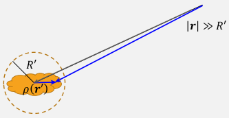$$ φ(\pmb{r})=\frac{1}{4πε_0}\int_V \frac{ρ(\pmb{r'})}{|\pmb{r}-\pmb{r'}|}dV' $$但是由于带电体$ρ(\pmb{r'})$不规则，导致不好积分，只能做近似。
-
常见两种电势的多极展开方法。一种展开为直角坐标 ${\displaystyle (x,y,z)}$ 的泰勒级数，称为“笛卡儿多极展开”；另一种是用距离倒数的幂和球谐函数展开，是以球坐标表示，称为“球多极展开”。
-
电势在直角坐标系下对 $\pmb r$ 泰勒展开：
如果是对 $\pmb r$ 泰勒展开，应该是某一个变量减去 $\pmb r$，比如 $f(x) = f(r) + f'(r)(x-r) + 1/2 f''(r)(x-r)^2+...$， 但是在电势$φ$表达式中是 $\frac{1}{|\pmb r - \pmb{r'}|}$，位置颠倒了，正宗的$(\pmb{r'}-\pmb{r})$ 变成了 $(\pmb r - \pmb{r'})$，所以多个负号。 如果是在 $\pmb{r'}$ 展开，第一项是$\frac{1}{\pmb{r'}}=\frac{1}{0}$，电荷本身处电势无穷大。
$\pmb r$ 是远场三维点：$\pmb{r}=(x,y,z)$，场源 $\pmb{r'}=(x',y',z')$，$|\pmb r - \pmb{r'}|$ 是远场点到场源的距离， 因为不知道场源 $\pmb{r'}$ 的具体位置，所以需要用泰勒级数多极近似，不断逼近场源真实位置； 电势随距离衰减：$\frac{1}{\pmb{r}-\pmb{r'}}=\frac{1}{\sqrt{(x-x')^2+(y-y')^2+(z-z')^2}}$
$$ \begin{aligned} & \frac{1}{|\pmb{r}-\pmb{r’}|} \
& =\frac{1}{|\pmb{r}|} \qquad (从远处看,认为场源在电荷区的圆心位置,距离为r) \
& -\left(x’ \frac{∂}{∂x} \frac{1}{|\pmb{r}|} +y’ \frac{∂}{∂y} \frac{1}{|\pmb{r}|} +z’ \frac{∂}{∂z} \frac{1}{|\pmb{r}|} \right) \qquad \text{(在圆心位置附近加偏移量:偏差乘以变化率)} \
& +\frac{1}{2!} \begin{pmatrix} x^{‘2} & x’y’ & x’z’\ y’x’ & y^{‘2} & y’z’\ z’x’ & z’y’ & z^{‘2} \end{pmatrix} :\begin{pmatrix} \frac{∂^2}{∂ x^2} & \frac{∂^2}{∂x ∂y} & \frac{∂^2}{∂x ∂z}\ \frac{∂^2}{∂y ∂x} & \frac{∂^2}{∂y^2} & \frac{∂^2}{∂y ∂z}\ \frac{∂^2}{∂z ∂x} & \frac{∂^2}{∂z ∂y} & \frac{∂^2}{∂ z^2} \end{pmatrix} \frac{1}{|\pmb{r}|} \quad \text{(两个方向上的偏差)}\ & \qquad\qquad \text{(并矢 : 对应位置相乘再求和)} \
& -… \end{aligned} $$
先只看前三级近似，可简写成：（$\Sigma$表示3/9/27个方向上偏移量之和）
$$ \begin{aligned} \frac{1}{|\pmb{r}-\pmb{r’}|} &= \frac{1}{|\pmb{r}|} - \sum_i x_i’ \frac{∂}{∂ x_i} \frac{1}{|\pmb{r}|} + \frac{1}{2!} \sum_{i,j}x_i’x_j’ \frac{∂^2}{∂x_i ∂x_j} \frac{1}{|\pmb{r}|} & \text{($x'_i / x'_j$代表x,y,z)} \
&= \frac{1}{|\pmb r|} + \frac{\pmb r \cdot \pmb{r’}}{|\pmb r|^3} + \cdots \end{aligned} $$
把$\frac{1}{|\pmb{r}-\pmb{r'}|}$代入$φ(\pmb{r})$ :
$$ \begin{aligned} φ(\pmb{r}) =& \frac{1}{4πε_0} \int_V ρ(\pmb{r’}) \left( \frac{1}{|\pmb{r}|} - \sum_i x_i’ \frac{∂}{∂ x_i} \frac{1}{|\pmb{r}|} +\frac{1}{2!} \sum_{i,j}x_i’x_j’ \frac{∂^2}{∂x_i ∂x_j} \frac{1}{|\pmb{r}|} \right)dV’ \
=& \frac{1}{4πε_0} \left[ \int_V ρ(\pmb{r’})dV’ \right] \frac{1}{|\pmb{r}|} &\text{($φ^{(0)}(r)$ 电单极)}\
& -\frac{1}{4πε_0} \sum_i \left[ \int_V ρ(\pmb{r’}) x_i’dV’ \right] \frac{∂}{∂ x_i} \frac{1}{|\pmb{r}|} &\text{($φ^{(1)}(r)$ 电偶极)}\
& +\frac{1}{4πε_0} \frac{1}{2!} \sum_{i,j} \left[ \int_V ρ(\pmb{r’})x_i’x_j’dV’ \right] \frac{∂^2}{∂ x_i∂ x_j} \frac{1}{|\pmb{r}|} &\text{($φ^{(2)}(r)$ 电四极)} \end{aligned} $$
这样就把电荷坐标 $\pmb{r'}$ 和空间势场坐标 $\pmb r$ 做了分离，使得运算更为简练，物理图像更为清晰。
电单极：
-
把电势$φ$在远场点做泰勒展开的第一项。
$$ \begin{aligned} & \begin{cases} φ^{(0)}(r) = \frac{1}{4πε_0} \left[ \int_V ρ(\pmb{r'})dV' \right] \frac{1}{|\pmb{r}|} \\ Q = \int_V ρ(\pmb{r})dV' \end{cases}\\ \end{aligned} $$$$ \begin{aligned} & φ^{(0)}(r) = \frac{Q}{4π ε_0 r} \end{aligned} \tag{1.9.4} $$离得非常远，看不到形状，把所有电荷近似看成集中在原点，认为场源是个点电荷，电势随着距离以 r 的-1次方衰减。
电偶极
-
电势$φ$在远场点做泰勒展开的第二项。
$$ -\frac{1}{4πε_0}\sum_i \left[ \int_V \underline{ ρ( \pmb{r'})x_i'} dV' \right] \frac{∂}{∂ x_i}\frac{1}{|\pmb{r}|} $$定义三个分量：
则它们三个组成的向量为点电荷源的电偶极矩：
$$ \pmb p=(p_x,p_y,p_z)=\int_V ρ(\pmb {r'}) \pmb{r'} dV' \tag{1.9.5} $$对于势场坐标项（3个方向）：
$$ \begin{aligned} \frac{∂}{∂x} \frac{1}{|\pmb{r}|} &= \frac{∂}{∂x} (x^2+y^2+z^2)^{-\frac{1}{2}} = -x(x^2+y^2+z^2)^{-\frac{3}{2}} = \frac{-x}{r^3} \\ \frac{∂}{∂y} \frac{1}{|\pmb{r}|} &= \frac{-y}{r^3} \\ \frac{∂}{∂z} \frac{1}{|\pmb{r}|} &= \frac{-z}{r^3} \\ \end{aligned} $$将电偶极矩 $\pmb p$ 和电势坐标项代入一级近似：
$$ \begin{aligned} φ^{(1)}(\pmb{r}) &=-\frac{1}{4πε_0}\sum_i \left[\int_Vρ(\pmb{r’})x_i’dV’\right]\frac{∂}{∂ x_i}\frac{1}{|\pmb{r}|} \
&=\frac{1}{4πε_0}\sum_i\frac{p_ix_i}{r^3} \ &=\frac{\pmb{p}\cdot\pmb{r}}{4πε_0|\pmb{r}|^3} \end{aligned} \tag{1.9.6} $$
将坐标统一改成球坐标形式：
$$ \begin{aligned} \frac{x}{r^3} &= \frac{rsinθ cosφ}{r^3} = \frac{sinθ cosφ}{r^2} \\ \frac{y}{r^3} &= \frac{rsinθ sinφ}{r^3} = \frac{sinθ sinφ}{r^2} \\ \frac{z}{r^3} &= \frac{rcosθ}{r^3} = \frac{cosθ}{r^2} \\ \end{aligned} $$偶极近似每一项的电势分布分别沿着 x,y,z 方向极化。x，y，z越大$φ^{(1)}(\pmb{r})$ 越大。
偶极近似电势为：
$$ φ^{(1)}(\pmb{r})=\frac{1}{4πε_0}\sum_i(p_xsinθ cosφ+p_ysinθ sinφ+p_zcosθ)\frac{1}{r^2} $$可以看出偶极项在径向上随着距离以$\frac{1}{r^2}$衰减，比单极衰减的快，离得近了可以看到这个衰减项。 离得远了，0级近似下就认为电荷都集中在原点即可。如果零级近似为零，即电荷总量为零，则需要考虑1级近似，也就是电偶极近似。
在角度分布上，偶极产生的电势分布并不是各向同性的。如图 1.9.2 所示，偶极近似每一项的电势分布分别沿着 x,y,z 方向极化。
如果选择电偶极矩 $\pmb p$ 的方向为z方向，则
$$ φ^{(1)}(\pmb{r})=\frac{|\pmb{p}|cosθ}{4πε_0 r^2} $$可以看到偶极近似的电势总和在角度分布上是沿着偶极方向极化。
(e)正负点电荷
例题：如下图所示，两个带电分别为$±Q$的点电荷，相距$l$ ,求$|\pmb{r}| ≫ l$ 时电势的近似表达式。
方法一：
P点电势的严格解为两个电荷在远场的电势贡献叠加：
$$ φ = \frac{Q}{4πε_0} \left( \frac{1}{r_+} - \frac{1}{r_-} \right) = \frac{Q}{4πε_0} \frac{r_- - r_+}{r_+ r_-} $$当$|\pmb{r}| ≫ l$时：
$$ \begin{aligned} r_- - r_+ \approx l cosθ \\ r_+ r_- \approx |\pmb{r}|^2 \end{aligned} $$可得P点电势：
$$ φ = \frac{Q}{4πε_0} \frac{l cosθ}{|\pmb{r}|^2} $$方法二：
该体系的总电荷量为零，则零级近似为0。以两个电荷的中心为原点，两电荷连线方向为 z 方向，则两个电荷的坐标分别为 $(0,0, l/2)$ 和 $(0,0, −l/2)$。
可得电偶极矩 $\pmb p$ 为：（只有z方向）
$$ \begin{aligned} \pmb{p} &=\int_V ρ(\pmb{r'})\pmb{r'}dV' \\ &=Q\frac{l}{2}\pmb{e_z}+(-Q)(-\frac{l}{2})\pmb{e_z} \\ &=Ql\pmb{e_z} \\ &=Q\pmb{l} \end{aligned} $$代入偶极近似1.9.6：
$$ φ^{(1)}(\pmb{r})=\frac{Q\pmb{l}\cdot \pmb{r}}{4π ε_0|\pmb{r}|^3} = \frac{Qlcosθ}{4πε_0 |\pmb{r}|^2} $$所以正负电荷对在远场可近似为偶极子,通常我们也把偶极子想象成正负电荷对。但是要注意,这两种都是近似。正负电荷对还有其它高阶项,在距离偶极子较近时偏差较为明显。下一节讲到球谐函数时我们再论述什么时“真正”的偶极子
(+)张量缩并
电四极
$$ \frac{1}{4πε_0} \frac{1}{2!} \sum_{i,j} \left[\int_V ρ(\pmb{r'})x_i'x_j'dV' \right] \frac{∂^2}{∂x_i ∂x_j} \frac{1}{|\pmb{r}|} $$-
形式一：
-
根据电四极，定义电四极矩 $D_{ij}$ ：（为了与势场坐标项对称，电荷分布项乘个3）
$$ D_{i,j}=\int_V 3ρ(\pmb{r}')x_i'x_j'd \pmb V' \tag{1.9.7} $$ -
势场位矢倒数求两次导等于：
$$ \frac{∂^2}{∂x_i ∂x_j} \frac{1}{|\pmb{r}|} = \frac{3x_i x_j-δ_{i,j}r^2}{r^5} $$其中：
$$ \begin{aligned} \text{三个对角项：} \frac{∂^2}{∂ x^2}\frac{1}{|\pmb{r}|}&= \frac{∂^2}{∂ x}\frac{x}{r^3}=\frac{3x^2-r^2}{r^5} \
\frac{∂^2}{∂ y^2}\frac{1}{|\pmb{r}|}&= \frac{∂^2}{∂ y}\frac{y}{r^3}=\frac{3y^2-r^2}{r^5} \
\frac{∂^2}{∂ z^2}\frac{1}{|\pmb{r}|}&= \frac{∂^2}{∂ z}\frac{z}{r^3}=\frac{3z^2-r^2}{r^5} \
\text{三个非对角项：} \frac{∂^2}{∂ x∂ y}\frac{1}{|\pmb{r}|}&=\frac{∂}{∂ x}(-y(x^2+y^2+z^2)^{-\frac{3}{2}})=\frac{3xy}{r^5} \
\frac{∂^2}{∂ x∂ z}\frac{1}{|\pmb{r}|}&=\frac{3xz}{r^5} \
\frac{∂^2}{∂ y∂ z}\frac{1}{|\pmb{r}|}&=\frac{3yz}{r^5} \end{aligned} $$
由上看出：对角项$(i=j)$的分子需要减$r^2$，而非对角项$(i\neq j)$不需要减。
将上面电四极矩$D_{ij}$和势场位矢二阶导$\frac{∂^2}{∂x_i ∂x_j} \frac{1}{|\pmb r|}$代入电四极项：
$$ \begin{aligned} φ^{(2)}(\pmb{r}) &=\frac{1}{4πε_0}\frac{1}{2!}\frac{1}{3}\sum \left[\int_V3ρ(\pmb{r}’)x_i’x_j’dV’\right] \frac{∂^2}{∂x_i ∂x_j} \frac{1}{|\pmb{r}|} \
&=\frac{1}{4πε_0}\frac{1}{6}\sum_{i,j} D_{ij} \frac{3x_i x_j-δ_{i,j}r^2}{r^5} \ \end{aligned} \tag{1.9.8} $$
$D_{ij}$是3x3张量，$∇∇\frac{1}{|\pmb{r}|}$ 也是3x3张量，所以 $\sum_{i,j} D_{ij}\frac{3x_i x_j-δ_{i,j}r^2}{r^5}$ 是这两个张量做并矢（对应位置相乘）然后相加：
$$ \begin{array}{} &D_{ij}:∇∇\frac{1}{|\pmb{r}|}\ &= \begin{pmatrix} \int_V3ρ(\pmb{r’})x’^2dV’ & \int_V3ρ(\pmb{r’})x’y’dV’ & \int_V3ρ(\pmb{r’})x’z’dV’\
\int_V3ρ(\pmb{r’})y’x’dV’ & \int_V3ρ(\pmb{r’})y’^2dV’ & \int_V3ρ(\pmb{r’})y’z’dV’\
\int_V3ρ(\pmb{r’})z’x’dV’ & \int_V3ρ(\pmb{r’})z’y’dV’ & \int_V3ρ(\pmb{r’})z’^2dV’\ \end{pmatrix} :\begin{pmatrix} \frac{3y^2-r^2}{r^5} & \frac{3xy}{r^5} & \frac{3xz}{r^5}\ \frac{3yx}{r^5} & \frac{3y^2-r^2}{r^5} & \frac{3yz}{r^5}\ \frac{3zx}{r^5}& \frac{3zy}{r^5} & \frac{3z^2-r^2}{r^5} \end{pmatrix}\\
&=\begin{pmatrix} \int_V3ρ(\pmb{r’})x’^2dV’\left(\frac{3y^2-r^2}{r^5} \right) & \int_V3ρ(\pmb{r’})x’y’dV’\left(\frac{3xy}{r^5}\right) & \int_V3ρ(\pmb{r’})x’z’dV’(\frac{3xz}{r^5}) \
\int_V3ρ(\pmb{r’})y’x’dV’\left(\frac{3yx}{r^5}\right) & \int_V3ρ(\pmb{r’})y’^2dV’\left(\frac{3y^2-r^2}{r^5}\right) & \int_V3ρ(\pmb{r’})y’z’dV’\left(\frac{3yz}{r^5}\right)\
\int_V3ρ(\pmb{r’})z’x’dV’\left(\frac{3zx}{r^5}\right) & \int_V3ρ(\pmb{r’})z’y’dV’\left(\frac{3zy}{r^5}\right) & \int_V3ρ(\pmb{r’})z’^2dV’\left(\frac{3z^2-r^2}{r^5}\right)\
\end{pmatrix} \end{array} $$
所以：
$$ \begin{aligned} & \sum_{i,j}D_{i,j}:∇∇\frac{1}{|\pmb{r}|}=\\ & \int_V3ρ(\pmb{r'})x'^2dV'\left(\frac{3y^2-r^2}{r^5} \right) +\int_V3ρ(\pmb{r'})y'^2dV'\left(\frac{3y^2-r^2}{r^5}\right) +\int_V3ρ(\pmb{r'})z'^2dV'\left(\frac{3z^2-r^2}{r^5}\right)\\ & +2\int_V3ρ(\pmb{r'})x'y'dV'\left(\frac{3xy}{r^5}\right) +2\int_V3ρ(\pmb{r'})x'z'dV'(\frac{3xz}{r^5} +2\int_V3ρ(\pmb{r'})y'z'dV'\left(\frac{3yz}{r^5}\right) \end{aligned} $$所以电四极项：
-
可以看到，电四极矩有六项，各自在球坐标系空间分布为：
$$ \begin{aligned} \frac{3x^2 - |\pmb r|^2}{|\pmb r|^5} &= \frac{3(rsinθcosϕ)^2 - r^2}{r^5} = \frac{3sin^2θ cos^2ϕ-1}{r^3} \\ \frac{3y^2 - |\pmb r|^2}{|\pmb r|^5} &= \frac{3(rsinθsinϕ)^2 - r^2}{r^5} = \frac{3sin^2θ sin^2ϕ-1}{r^3} \\ \frac{3z^2 - |\pmb r|^2}{|\pmb r|^5} &= \frac{3(rcosθ)^2 - r^2}{r^5} = \frac {3cos^2θ - 1}{r^3} \\ \frac{xy}{|\pmb r|^5} &= \frac{rsinθcosϕ\,rsinθsinϕ}{r^5} = \frac{sin^2θcosϕsinϕ}{r^3} \\ \frac{yz}{|\pmb r|^5} &= \frac{rsinθsinϕ\,rcosθ}{r^5} = \frac{sinθsinϕ cosθ}{r^3} \\ \frac{xz}{|\pmb r|^5} &= \frac{rsinθcosϕ rcosθ}{r^5} = \frac{sinθcosϕ cosθ}{r^3} \end{aligned} $$在径向均以 $\frac{1}{r^3}$ 形式衰减，比电偶极矩衰减更快，角度分布更为不均匀，有两个或四个节点，如图1.9.4。
-
形式二：
将电四极矩定义为：(与势场项相似)
$$ D_{ij}=\int_V ρ(\pmb{r'})(3x_i'x_j'-δ_{ij}r'^2)dV' \tag{1.9.9} $$电四极项仍然可以写成：
$$ \begin{aligned} φ^{(2)}(\pmb{r}) &=\frac{1}{4πε_0} \frac{1}{2!} \frac{1}{3} \sum_{ij} \left[ \int_V ρ(\pmb{r'})(3x_i'x_j'-δ_{ij}r'^2) dV' \right] \frac{3x_i x_j-δ_{i,j}r^2}{r^5} \\ &=\frac{1}{4πε_0} \frac{1}{6}\sum_{i,j} D_{ij} \frac{3x_i x_j-δ_{i,j}r^2}{r^5} \\ \end{aligned} $$展开：
$$ \begin{aligned} φ^{(2)}(\pmb{r}) &=\frac{1}{4πε_0}\frac{1}{6} \left\lbrace \begin{aligned} \left[ \int_V 3ρ(\pmb{r'}) \frac{3x'^2-δ_{ij}r^2}{r^5} dV' \right] \left(\frac{3y^2-r^2}{r^5} \right)\\ +\left[ \int_V 3ρ(\pmb{r'}) \frac{3y'^2-δ_{ij}r^2}{r^5} dV' \right] \left(\frac{3y^2-r^2}{r^5}\right)\\ +\left[ \int_V 3ρ(\pmb{r'}) \frac{3z'^2-δ_{ij}r^2}{r^5} dV' \right] \left(\frac{3z^2-r^2}{r^5}\right)\\ +2\left[ \int_V 3ρ(\pmb{r'}) x'y' dV' \right] \left(\frac{3xy}{r^5}\right)\\ +2\left[ \int_V 3ρ(\pmb{r'}) x'z' dV' \right] \left(\frac{3xz}{r^5}\right)\\ +2\left[ \int_V 3ρ(\pmb{r'}) y'z' dV' \right] \left(\frac{3yz}{r^5}\right) \end{aligned} \right\rbrace \end{aligned} $$这样写的好处是：
-
电四极矩的表达式和电势的空间分布形式相同；
-
当电荷是球对称分布时，这种表达方式电四极矩每一项均为零：
$$ ∫_V ρ(\pmb{r'}) x'^2 dV' = ∫_V ρ(\pmb{r'}) y'^2 dV' = ∫_V ρ(\pmb{r'}) y'^2 dV' = \frac{1}{3} ρ(\pmb{r'}) r'^2 dV' $$而形式一中的电四极矩的定义 1.9.7，每一个对角项并不为零；
-
这组函数具有一定正交性，这将在下一节球谐函数中讲到。这种表达方式是常用的表达方式。
-
-
形式三
将电四极的表达式改写为：
$$ \begin{aligned} φ^{(2)}(\pmb r) \ &= \frac{1}{4πε_0} \frac{1}{6} \sum_{i,j} \left[ ∫_V ρ(\pmb{r'}) (3x'_i x'_j - \delta_{ij} r'^2) \right] \frac{3x_i x_j}{r^5} \\ &= \frac{1}{4πε_0} \frac{1}{6} \sum_{i,j} D_{ij} \frac{3x_i x_j}{r^5} \end{aligned} \tag{1.9.11} $$其中电四极矩的定义与形式二中的电四极矩的定义1.9.9相同。
展开：
$$ \begin{aligned} φ^{(2)}(\pmb{r}) &=\frac{1}{4πε_0} \frac{1}{6} \left\lbrace \begin{aligned} \left[ \int_V 3ρ(\pmb{r'}) \frac{3x'^2-δ_{ij}r^2}{r^5} dV' \right] \left(\frac{3x^2}{r^5} \right)\\ +\left[ \int_V 3ρ(\pmb{r'}) \frac{3y'^2-δ_{ij}r^2}{r^5} dV' \right] \left(\frac{3y^2}{r^5}\right)\\ +\left[ \int_V 3ρ(\pmb{r'}) \frac{3z'^2-δ_{ij}r^2}{r^5} dV' \right] \left(\frac{3z^2}{r^5}\right)\\ +2\left[ \int_V 3ρ(\pmb{r'}) x'y' dV' \right] \left(\frac{3xy}{r^5}\right)\\ +2\left[ \int_V 3ρ(\pmb{r'}) x'z' dV' \right] \left(\frac{3xz}{r^5}\right)\\ +2\left[ \int_V 3ρ(\pmb{r'}) y'z' dV' \right] \left(\frac{3yz}{r^5}\right) \end{aligned} \right\rbrace \end{aligned} $$这种形式的好处是每一项的空间分布函数比其它两种形式更为简单。其空间分布为：
$$ \begin{aligned} \frac{x^2}{|\pmb r|}^5 &= \frac{(rsinθcosϕ)^2}{r^5} = \frac{sin^2θcos^2ϕ}{r^3}\ \frac{y^2}{|\pmb r|}^5 &= \frac{(rsinθsinϕ)^2}{r^5} = \frac{sin^2θsin^2ϕ}{r^3}\ \frac{z^2}{|\pmb r|}^5 &= \frac{(rcosθ)^2}{r^5} = \frac{cos^2θ}{r^3}\
\frac{xy}{|\pmb r|}^5 &= \frac{rsinθcosϕ,rsinθsinϕ}{r^5} = \frac{sin^2θcosϕsinϕ}{r^3}\ \frac{xz}{|\pmb r|}^5 &= \frac{rsinθcosϕ,rcosθ}{r^5} = \frac{sinθcosϕcosθ}{r^3}\ \frac{yz}{|\pmb r|}^5 &= \frac{rsinθsinϕ,rcosθ}{r^5} = \frac{sinθsinϕcosθ}{r^3}\ \end{aligned} $$
(e)φ分布-电四极
例题：如图1.9.5的电荷分布，分别写出近似到电四极的电势分布。
这六种情况均是两对方向相反的偶极子组成，所以单极近似和偶极近似均为零。我们用形式一，由电四极的定义 1.9.7，可得：
$$ \begin{aligned} D_{11} &= 6Q(b^2 - a^2) \\ D_{22} &= 6Q(b^2 - a^2) \\ D_{33} &= 6Q(b^2 - a^2) \\ D_{12} &= 12Qab \\ D_{23} &= 12Qab \\ D_{31} &= 12Qab \\ \end{aligned} $$将这六种情况代入电势的电四极近似（形式一）1.9.8：
$$ \begin{aligned} φ^{(2)} &= \frac{1}{4πε_0} Q(b^2-a^2) \frac{3 sin^2θ cos^2ϕ-1}{r^3} \\ φ^{(2)} &= \frac{1}{4πε_0} Q(b^2-a^2) \frac{3 sin^2θ sin^2ϕ-1}{r^3} \\ φ^{(2)} &= \frac{1}{4πε_0} Q(b^2-a^2) \frac{3 cos^2θ -1}{r^3} \\ φ^{(2)} &= \frac{1}{4πε_0} 12Qab \frac{sin^2θcosϕsinϕ}{r^3} \\ φ^{(2)} &= \frac{1}{4πε_0} 12Qab \frac{sinθsinϕcosθ}{r^3} \\ φ^{(2)} &= \frac{1}{4πε_0} 12Qab \frac{sinθcosϕcosθ}{r^3} \\ \end{aligned} $$更高阶的项使用的较少，这里就不再论述了，这里可以给出一个定性的结果：第n级近似，在径向以 $r^{-n-1}$ 次方衰减。
1.10 分离变量法-球坐标
-
在球坐标系下，用分离变量法，解拉普拉斯方程，求(不规则带电体)电势分布。
-
在直角坐标系下，电势是四维向量 $(x,y,z,r)$，需要固定 $r$ 才能画出图像。球坐标系下，电势是三维量 $(r,θ,φ)$。球坐标系下拉普拉斯方程的表达式为：(与直角坐标系度规不同，所以有系数，但大体上还是分别对3个分量求导)
$$ ∇^2φ(\mathbf{r})= \frac{1}{r^2}\frac{∂}{∂r} \left(r^2\frac{∂ φ(\mathbf{r})}{∂ r}\right) +\frac{1}{r^2 sinθ} \frac{∂}{∂ θ} \left(sinθ\frac{∂φ(\mathbf{r})}{∂ θ}\right) +\frac{1}{r^2sin^2θ}\left(\frac{∂^2φ(\mathbf{r})}{∂ φ^2}\right) =0 \\ \tag{1.10.1} $$ -
目的
-
分离变量步骤：
-
把电势分成3个独立的函数（半径$r$，极角$\theta$，方位角$\phi$ 三个坐标分别的一元函数乘积的形式），但是它们又被拉普拉斯方程约束：
$$ φ(\mathbf{r})=U(r)P(θ)Q(ϕ) $$ -
代入拉普拉斯方程1.10.1可得：
$$ \frac{P(\theta) Q(\phi)}{r^2} \frac{d}{dr} \left( r^2 \frac{dU(r)}{dr} \right) +\frac{U(r) Q(\phi)}{r^2 sin\theta} \frac{d}{d\theta} \left( sin\theta \frac{dP(\theta)}{d\theta} \right) +\frac{U(r) P(\theta)}{r^2 sin^2\theta} \left( \frac{d^2 Q(\phi)}{d\phi^2} \right) =0 $$ -
方程两边同时除以 $\frac{φ(\mathbf{r})}{r^2}$（乘上$r^2/U(r)P(θ)Q(ϕ)$）得：
$$ \frac{1}{U(r)} \frac{d}{dr}\left(r^2\frac{dU(r)}{dr}\right) +\frac{1}{sinθ P(θ)} \frac{d}{dθ}\left(sinθ \frac{dP(θ)}{dθ} \right) +\frac{1}{sin^2θ Q(\phi)}\left(\frac{d^2Q(\phi)}{d\phi^2}\right) =0 $$ -
移项，并规定第一项等于 $l(l+1)$：
$$ \begin{aligned} &\frac{1}{U(r)} \frac{d}{dr}\left(r^2\frac{dU(r)}{dr}\right)\\ &=-\frac{1}{sinθ P(θ)} \frac{d}{dθ}\left(sinθ \frac{dP(θ)}{dθ} \right) -\frac{1}{sin^2θ Q(\phi)}\left(\frac{d^2Q(\phi)}{d\phi^2}\right)\\ &=l(l+1) \end{aligned} $$则径向函数 $U(r)$ 微分部分：
$$ r^2\frac{d^2U(r)}{dr^2}+2r\frac{dU(r)}{dr}-l(l+1)U(r)=0 $$ -
移项得到角度函数 $Q(ϕ)$ 的微分部分如下，并令其等于 $m^2$
$$ \begin{aligned} -\frac{1}{Q(\phi)} \left( \frac{d^2Q(\phi)}{d\phi^2} \right)&=
\frac{sinθ}{P(θ)} \frac{d}{dθ} \left(sinθ \frac{dP(θ)}{dθ} \right) +l(l+1)sin^2θ =m^2 \end{aligned} $$
则有两个方程：
$$ \begin{aligned} \frac{d^2Q(\phi)}{d\phi^2} + m^2Q(\phi)=0 \\ \frac{1}{sinθ P(θ)}\frac{d}{dθ}\left(sinθ \frac{dP(θ)}{dθ} \right)+l(l+1)-\frac{m^2}{sin^2θ} =0 \end{aligned} $$ -
就得到了极径 $r$，极角 $\theta$ 和方位角 $ϕ$ 函数的微分方程：
$$ \left{ \begin{aligned}{} &r^2 \frac{d^2U(r)}{dr^2} + 2r\frac{dU(r)}{dr}-l(l+1)U(r)=0 \
&\frac{1}{sinθ P(θ)} \frac{d}{dθ} \left(sinθ \frac{dP(θ)}{dθ} \right)+l(l+1)-\frac{m^2}{sin^2θ} =0 \
&\frac{d^2Q(\phi)}{d\phi^2}+m^2Q(\phi)=0 \ \end{aligned} \right. $$
可以看出：径向函数 $U(r)$ 只与 $l$ 有关，方位角函数$Q(ϕ)$只与$m$ 有关，极角函数$P(θ)$ 与 $l,m$ 都有关，也就是由 $U(r)$ 和 $Q(ϕ)$ 共同决定。
根据角度分布的边界条件，$l$是非负整数，$m$ 是整数，表示转几圈，并且 $|m|\le l$ ，则 $m$ 的个数=$2l+1$
-
方程的解为：
$$ \left\{ \begin{aligned} U(r) &= Ar^l+Br^{-l-1} &\text{(随r增加，U(r)以l次方增加或者以$-l-1$次方衰减)}\\ P(θ) &= P_l^m(cosθ) \\ Q(\phi) &= e^{im\phi} &\text{指数增强} \end{aligned} \right. $$其中 $P_l^m(x)$ 是缔合勒让德函数，其表达式为：
$$ P_l^m(x)=\frac{(-1)^m}{2^l l!}(1-x^2)^{m/2}\frac{d^{l+m}}{dx^{l+m}}(x^2-1)^l \tag{1.10.2} $$其中 $P(θ)Q(\phi) = P_l^m(cosθ)e^{im\phi}$，这是一组关于 $(θ,\phi)$ 的完备正交基，再乘上系数使归一化，这组基函数就是球谐函数：
$$ Y_{lm}(θ,\phi)=\sqrt{\frac{2l+1}{4π} \frac{(l-m)!}{(l+m)!}}P_l^m(cosθ)e^{im\phi} \tag{1.10.3} $$对于它的归一性：（当 $l'=l$，且$m'=m$ 时，才等于1）
$$ \int Y_{l'm'}^*(θ,\phi)Y_{lm}(θ,\phi)dΩ = \int Y_{l'm'}^*(θ,\phi)Y_{lm}(θ,\phi)sinθ\, dθ\, d\phi = δ_{l'l}δ_{m'm} $$
-
(+)球谐函数
-
球谐函数是拉普拉斯方程的球坐标系形式解的角度部分。
-
它是一组完备正交基，可以表示球坐标系下任意一个角度函数（？）有两个参数$l,m$，$l$决定了$m$。
-
球谐函数虽然有解析表达 1.10.2 和 1.10.3，但是随着$l$的增加，缔合勒让德多项式项数逐渐增加，表达式越来越复杂，对于大多数情况来说只有$l$ 较小的几项比较重要。下面是 $l=0,1,2$ 三种情况下球谐函数的具体表达式
$$ \begin{aligned} & l=0,\ m=0 \qquad Y_{00}=\frac{1}{\sqrt{4π}} \
& l=1,\ m=0,\pm1 \qquad \left{ \begin{aligned} &Y_{11}=-\sqrt{\frac{3}{8π}}sinθ\ e^{i\phi} \ &Y_{10}=\sqrt{\frac{3}{4π}}cosθ \ &Y_{1-1}=\sqrt{\frac{3}{8π}}sinθ\ e^{-i\phi} \end{aligned} \right. \
& l=2,\ m=0,\pm 1,\pm2 \left{ \begin{aligned} &Y_{2,2}=\frac{1}{4} \sqrt{\frac{15}{2π}}sin^2θ\ e^{2i\phi} \ &Y_{2,1}=-\sqrt{\frac{15}{8π}}sinθ\ cosθ\ e^{i\phi} \ &Y_{2,0}=\sqrt{\frac{5}{4π}}\left(\frac{3}{2}cos^2θ-\frac{1}{2} \right) \ &Y_{2,-1}=\sqrt{\frac{15}{8π}}sinθ\cosθ\ e^{-i\phi} \ &Y_{2,-2}=\frac{1}{4}\sqrt{\frac{15}{2π}}sin^2θ e^{-2i\phi} \end{aligned} \right. \ \end{aligned} $$
所以拉普拉斯方程 1.10.1 的解的形式（径向部分 $U(r)$ 乘以角度部分 $P(\theta)Q(\phi)$）：
$$ φ(r,θ,\phi)=\sum_{l=0}^{+∞}\sum_{m=-l}^{m=l} \left( A_{lm}r^l + \frac{B_{lm}}{r^{l+1}} \right) Y_{lm}(θ,\phi) $$其中$A_{lm}$和$B_{lm}$ 为待定系数，由边界条件来决定。
(e)球面电势分布
例1：已知某一半径为 R 球面上的电势分布为 $\Phi(θ ,\phi)$，求空间电势分布。
解：空间中除球面外无电荷分布，因此球外或球内都满足拉普拉斯方程。所以球外或者球内的电势分布的形式都为：
$$ φ(r,θ,\phi) = \sum_{l=0}^{+∞}\sum_{m=-l}^{m=l} \left( A_{lm}r^l + \frac{B_{lm}}{r^{l+1}} \right) Y_{lm}(θ,\phi) $$由于球外到无穷远处总电势为零，随着 $r$ 增加，电势不可能指数增加，所以 $r^l$ 项系数为零； 球内部无点电荷，随着 $r$ 减小，也不应该是指数增强，所以$\frac{1}{r^{l+1}}$ 项系数为零。 所以，空间电势分布为：
$$ φ(r,θ,\phi)= \left\{ \begin{aligned} &\sum_{l=0}^{+∞} \sum_{m=-l}^{m=l} A_{lm}r^l Y_{lm}(θ,\phi) &\text{$r根据边界条件：$r=R$ 时电势分布 $φ(R,θ,\phi)=\Phi(θ,\phi)$，将边界电势 $\Phi(θ,φ)$ 按正交函数集展开可得 $A_{lm}$ 和 $B_{lm}$ 的表达式： （求系数的方法：$φ(r,θ,\phi)$ 乘上$Y_{lm}(θ,\phi)$ 对$θ,\phi$积分）
$$ \left\{ \begin{aligned} & A_{lm} = \frac{1}{R^l} \int Y_{lm}^*(θ,\phi) \Phi(θ,φ)sinθ\ dθ\, d\phi \\ & B_{lm} = R^{l+1} \int Y_{lm}^*(θ,\phi) \Phi(θ,\phi)sinθ\ dθ\, d\phi \end{aligned} \right. \tag{1.10.4} $$(e)球面电荷分布
例2：已知空间中某一球面面电荷密度分布为 $σ(θ,\phi)$，求空间电势分布。
解：空间电势分布的形式为球谐函数的线性叠加：
$$ φ(r,θ,\phi)= \left\{ \begin{aligned} &\sum_{l=0}^{+∞} \sum_{m=-l}^{m=l} A_{lm}r^l Y_{lm}(θ,\phi) &\text{$r根据电势 $\Phi(r,θ,\phi)$ 和其梯度(电场) $\frac{∂}{∂r} \Phi(r,θ,\phi)$， 在 $r=R$ 处连续（如果不连续就是无穷大，我们不接受电场无穷大），可确定出：
$$ \left\{ \begin{aligned} & A_{lm}R^l = \frac{B_{lm}}{R^{l+1}} \quad\text{(对应项都相等)}\\ & \sum_{l=0}^{+∞}\sum_{m=-l}^{m=l} \left( lA_{lm}R^{l-1}Y_{lm}(θ,\phi)+\frac{(l+1)B_{lm}}{R^{l+2}}Y_{lm}(θ,\phi) \right) =\frac{σ(θ,\phi)}{ε_0} \ \text{(高斯定理:$(E_1+E_2)2S=\frac{σ S}{ε_0}$)} \end{aligned} \right. $$将边界电荷面密度 $σ(θ,\phi)$ 依 $Y_{lm}(θ,\phi)$ 展开可得：
$$ lA_{lm}R^{l-1}+(l+1)A_{lm}R^{l-1}=\int Y_{lm}^*(θ,\phi)\frac{σ(θ,\phi)}{ε_0}sinθ\ dθ\ d\phi $$从而可得：
$$ \left\{ \begin{aligned} &A_{lm}=\frac{1}{ε_0}\frac{1}{2l+1} \frac{1}{R^{l-1}}\int Y_{lm}^*(θ,\phi)σ(θ,\phi)sinθ\ dθ\ d\phi \\ &B_{lm}=\frac{1}{ε_0}\frac{R^{l+2}}{2l+1}\int Y_{lm}^*(θ,\phi)σ(θ,\phi)sinθ\ dθ\ d\phi \end{aligned} \right. \tag{1.10.5} $$两个例题向我们展示了球谐函数的主要应用方法，也向我们展示了一个重要的图像：对于一个球壳，其表面电势(或者电荷)依某一种对称的球谐函数分布，则其产生的电势在空间的分布也会按照这种形式分布。电荷的对称性决定了电场和空间电势的对称性。
(e)局域分布电荷在远场产生电势
例3：对于在一个半径不超过 $R'$ 的空间里分布着电荷密度为 $ρ(\mathbf{r'})$的电荷，用球谐函数表示在电荷区域以外空间的电势分布。
解：将电荷区域分成一系列的以原点为中心的带电荷球壳，每个球壳对外的电势贡献可由例 2 的结论 1.10.5 来给出。然后将所有球壳的贡献求和即可得总的电势。
在半径为 $r'$ 的球壳电荷面密度可表示为:
$$ σ(\mathbf{r'},θ,\phi)=ρ(\mathbf{r'}) d {\rm r'} $$由于是求球壳以外的电势（$r>R$），所以只需要考虑 $r^{-l-1}$ 项，则其（不同$l, m$）系数形式为：
$$ \begin{aligned} B_{lm}(r’) &= \frac{1}{ε_0} \frac{r’^{l+2}}{2l+1} \int Y_{lm}^*(θ,ϕ)σ(θ,ϕ)sinθ\ dθ, dϕ \
&= \frac{1}{ε_0} \frac{r’^{l+2}}{2l+1} \int_Ω Y_{lm}^*(θ,ϕ) σ(\mathbf{r’},θ,ϕ) dΩ &\text{(对立体角积分)} \
&= \frac{1}{ε_0} \frac{r’^{l+2}}{2l+1} \int_Ω Y_{lm}^*(θ,ϕ) ρ(\mathbf r’)dr’ dΩ &\text{(面密度用体密度表示)}\
&= \frac{1}{ε_0} \frac{1}{2l+1}\int_Ω r’^l\ Y_{lm}^*(θ,ϕ) ρ(\mathbf{r’})\ r’^2\ dr’\ dΩ &\text{(把$r'^{l+2}$乘进去)} \end{aligned} $$
所有球壳的贡献总和为：
$$ \begin{aligned} B_{lm}&=\frac{1}{ε_0}\frac{1}{2l+1}\int_V r'^l\ Y_{lm}^*(θ,ϕ)ρ(\mathbf{r'})\ r'^2\ dr'\ dΩ \\ &=\frac{1}{ε_0}\frac{1}{2l+1}\int_V r'^l\ Y_{lm}^*(θ,ϕ)ρ(\mathbf{r'})\ dV' \end{aligned} $$从而外场电势可表示为：
$$ φ(r,θ,ϕ) = \frac{1}{ε_0} \sum_{l=0}^{+∞}\sum_{m=-l}^{m=l} \left[\frac{1}{2l+1} \int_V r'^l\ Y_{lm}^*(θ,ϕ) ρ(\mathbf{r'})\ dV' \right] \frac{Y_{lm}(θ,φ)}{r^{l+1}} \tag{1.10.6} $$可以看出，电势分布是一系列 $r^{-l-1}$ 项求和，这与电多极的形式类似，下面验证上式中$l=0,1,2$ 分别对应着电单极，电偶极和电四极。
球多极展开 - 电单极
只分析外场电势，球谐函数展开，$l=0$ 对应零级近似。
$l=0$：
$$ \begin{aligned} \int r’^l Y_{lm}^(θ,ϕ) ρ(\mathbf{r’}) dV’ &= \int Y_{00}^(θ,ϕ) ρ(\mathbf{r’}) dV’ = \frac{1}{\sqrt{4π}} \int ρ(\mathbf{r’}) dV’ = \frac{Q}{\sqrt{4π}} \
\frac{Y_{lm}(θ,ϕ)}{r^{l+1}} &= \frac{Y_{00}(θ,ϕ)}{r}=\frac{1}{\sqrt{4π r}} \end{aligned} $$
所以电势为：
$$ \begin{aligned} φ_{00}(r,θ,ϕ) &= \frac{1}{ε_0} \frac{Q}{\sqrt{4π}} \frac{Y_{lm}(θ,ϕ)}{r} \\ &= \frac{1}{ε_0} \frac{Q}{\sqrt{4π}} \frac{1}{\sqrt{4πr}} \frac{1}{r}\\ &= \frac{Q}{4πε_0r} \end{aligned} $$和电单极一样，是点电荷贡献的电势。
球多极展开 - 电偶极
-
$l=1, m=0$
$$ \begin{aligned} \int r’ Y_{10}^*(θ,ϕ) ρ(\mathbf{r’})dV’ &= \int r’ \sqrt{\frac{3}{4π}}cosθ ρ(\mathbf{r’})dV’ = \sqrt{\frac{3}{4π}}p_z\
\frac{Y_{10}(θ,ϕ)}{r^{l+1}} &= \sqrt{\frac{3}{4π}}\frac{cosθ}{r^2} = \sqrt{\frac{3}{4π}}\frac{z}{r^3} \end{aligned} $$
代入外场电势公式1.10.6的 10 项：
$$ \begin{aligned} φ_{10}(r,θ,ϕ) &=\frac{1}{ε_0} \frac{1}{3} \sqrt{\frac{3}{4π}}p_z \sqrt{\frac{3}{4π}}\frac{z}{r^3} \\ &=\frac{p_z z}{4πε_0 r^3} \end{aligned} $$这就是电偶极的 $p_z$ 分量的贡献：
-
$l=1, m=1$
$$ \begin{aligned} \int r’ Y_{11}^*(θ,ϕ) ρ(\mathbf{r’})dV’ &= -\int r’ \sqrt{\frac{3}{8π}}sinθ e^{-iϕ} ρ(\mathbf{r’})dV’ = -\sqrt{\frac{3}{8π}}(p_x-ip_y)\
\frac{Y_{11}(θ,ϕ)}{r^{l+1}} &= -\sqrt{\frac{3}{8π}}\frac{sin\ e^{iϕ}}{r^2} = -\sqrt{\frac{3}{8π}}\frac{x+iy}{r^3} \end{aligned} $$
代入1.10.6的11项，可求得外场电势为：
$$ \begin{aligned} φ_{11}(r,θ,ϕ) &= \frac{1}{ε_0} \frac{1}{3} \sqrt{\frac{3}{8π}}(p_x-ip_y) \sqrt{\frac{3}{8π}}\frac{x+iy}{r^3} \\ &= \frac{1}{4π ε_0r^3} \frac{(p_x-ip_y)(x+iy)}{2} \\ &= \frac{1}{4πε_0 r^3} \frac{p_xx+p_yy+i(p_xy-p_yx)}{2} \end{aligned} $$除了 $p_x$和$p_y$ 分量的贡献外还有一个虚部的交叉项，下面可以看到 1-1 项是11 项的复共轭，两者求和可以把这个虚部消掉
-
$l=1, m=-1$
$$ \begin{aligned} \int r' Y_{1-1}^*(θ,\phi) ρ(\mathbf{r'})dV' &= \int r' \sqrt{\frac{3}{8\pi}} sin \theta e^{i\phi} \rho(\pmb{r'}) dV' = \sqrt{\frac{3}{8\pi}}(p_x + i p_y) \\ \frac{Y_{1-1}(θ,\phi)}{r^{l+1}} &= \sqrt{\frac{3}{8\pi}} \frac{sin\theta e^{-i\phi}}{r^2} = \sqrt{\frac{3}{8\pi}} \frac{x-iy}{r^3} \end{aligned} $$代入1.10.6的 1-1 项可得：
$$ \begin{aligned} \varphi_{1-1}(r,\theta,\phi) &= \frac{1}{\varepsilon_0} \frac{1}{3} \sqrt{\frac{3}{8\pi}}(p_x + i p_y) \sqrt{\frac{3}{8\pi}} \frac{x-iy}{r^3} \
&= \frac{1}{4π\varepsilon_0 r^3} \frac{(p_x + ip_y)(x-iy)}{2} \ &= \frac{1}{4π\varepsilon_0 r^3} \frac{p_x x + p_y y - i(p_x y - p_y x)}{2} \end{aligned} $$
这里除了 $p_x$ 和 $p_y$ 分量的贡献外，还有一个虚部交叉项，这个虚部正好跟 11 项的虚部相反。
$$ \varphi_{11}(r,\theta,\phi) + \varphi_{10}(r,\theta,\phi) + \varphi_{1-1}(r,\theta,\phi) = \frac{p_x x + p_y y + p_z z}{4π\varepsilon_0 r^3} = \frac{\pmb p \cdot \pmb r}{4π\varepsilon_0 r^3} $$这正是电偶极产生的电场。
可以将 $\varphi_{11}(\theta,\phi), \varphi_{10}(\theta,\phi), \varphi_{1-1}(\theta,\varphi)$，三个正交归一函数可以改写成：$\frac{[Y_{1-1}(\theta,\phi) - Y_{11}(\theta,\phi)]}{\sqrt{2}},\ \frac{[Y_{11}(\theta,\phi) + Y_{1-1}(\theta,\phi)]}{\sqrt{2}i},\ Y_{10}(\theta,\phi)$，这三个正交归一函数，如果这3个函数展开，则对应结果就分别为：$p_x, p_y, p_z$。
这里我们还要注意，如果某一个球壳或者球体的电荷是按照 p 对称分布，则其在球谐函数上投影只有 $l=1$ 项（因为其它的函数都与 p 对称正交），则电势的分布只有偶极项，这是一个纯正的偶极，并不是近似。例如如果电荷的密度正比于 $cos \theta$，则这是一个纯正的偶极。
球多极展开-电四极
- $l=2, m=0$：
1.11 静电屏蔽
1.12 介质极化宏观表示
-
以晶格中的某一晶胞（或者分子）为例，由于其为电中性，所以零级近似贡献为零，只需要考虑电偶极以上的部分就可以。
假定第 i 个晶胞（或者分子）的偶极为 $p_i$，空间坐标为$\pmb r_i$，则其在远场 $\pmb r$ 处的电势贡献为：
$$ \varphi^{(1)} (\pmb r,\pmb{r_i}) = \frac{\pmb{p_i} \cdot (\pmb r - \pmb{r_i})}{4\pi\varepsilon_0 |\pmb r - \pmb{r_i}|^3} $$将空间中所有的偶极贡献求和：
$$ \varphi^{(1)} (\pmb r) = \sum_i \frac{\pmb{p_i} \cdot (\pmb r - \pmb{r_i})}{4\pi\varepsilon_0 |\pmb r - \pmb{r_i}|^3} $$如果在空间上不做到晶胞级别尺度的分辨，可以将这些密集的偶极看作是连续分布，从而定义偶极密度：
$$ \pmb P(\pmb r) = \frac{\sum_i \pmb{p_i}}{\Delta V} \tag{1.12.1} $$其中 $\Delta V$ 是较小空间体积，$\sum_i \pmb{p_i}$ 是这个空间内所有偶极矩之和。也称为电极化矢量，从而所有偶极贡献可由求和形式写成积分形式。
$$ \varphi^{(1)}(\pmb r) = \int \frac{\pmb P(\pmb{r'}) \cdot (\pmb r-\pmb{r'})}{4\pi\varepsilon_0|\pmb r - \pmb{r_i}|^3} dV' $$由于：
$$ \frac{(\pmb r - \pmb{r'})}{|\pmb r - \pmb{r'}|^3} = -\pmb\nabla \frac{1}{|\pmb r - \pmb{r'}|} = \pmb \nabla'\frac{1}{|\pmb r - \pmb{r'}|} $$则：
$$ \varphi^{(1)}(\pmb r) = \frac{1}{4\pi\varepsilon_0} \int \pmb P(\pmb{r’}) \pmb\nabla’ \frac{1}{|\pmb r - \pmb{r’}|} dV’ = \frac{1}{4\pi\varepsilon_0} \int \left[ \pmb\nabla’ \cdot \frac{\pmb P(\pmb{r’})}{|\pmb r - \pmb{r’}|}
- \frac{\pmb\nabla’ \cdot \pmb P(\pmb r)}{|\pmb r - \pmb{r’}|} \right] dV’ $$
根据高斯定理，无穷远处偶极密度为零，则第一项：
$$ \int \pmb\nabla' \cdot \frac{\pmb P(\pmb{r'})}{|\pmb r - \pmb{r'}|} dV' = \int \frac{\pmb P(\pmb{r'})}{|\pmb r - \pmb{r'}|} d\pmb{S'} = 0 $$因而
$$ \varphi^{(1)}(\pmb r) = -\frac{1}{4\pi\varepsilon_0} \int \frac{\pmb\nabla' \cdot \pmb P(\pmb{r'})}{|\pmb r - \pmb{r'}|} dV' $$可以看出这与电单极的形式相同，所以定义极化电荷密度的概念：
$$ \rho_P(r) = - \pmb\nabla \cdot \pmb P(\pmb r) \tag{1.12.2} $$容易理解：如果把偶极子近似成正负电荷对，偶极子场的散度就是空间相邻两个偶极子的差（画图），这两个差正好是两个偶极交叠处的电荷。
由以上化简可以得到空间中电势近似到偶极项的结果为：
$$ \varphi(\pmb r) = \varphi^{(0)}(\pmb r) + \varphi^{(1)}(\pmb r) = \frac{1}{4\pi\varepsilon_0} \int \frac{\rho_f(\pmb{r'}) - \pmb\nabla' \cdot \pmb P(\pmb{r'})}{|\pmb r - \pmb{r'}|} dV' $$根据对应关系，高斯定理可以写为：
$$ \pmb\nabla\cdot \pmb E = \frac{1}{\varepsilon_0} [ \rho_f(\pmb r) -\pmb\nabla' \cdot \pmb P(\pmb r) ] = \frac{1}{\varepsilon_0} [ \rho_f(\pmb r) +\rho_P(\pmb r)] = \frac{\rho(\pmb r)}{\varepsilon_0} $$为了方便使用，定义电位移矢量的概念：
$$ \pmb D = \varepsilon_0 \pmb E + \pmb P \tag{1.12.3} $$从而高斯定理也可写成：
$$ \pmb\nabla \cdot \pmb D = \rho_f \tag{1.12.4} $$一般来说，$\pmb P$ 与 $\pmb E$ 有一定的函数关系，$\pmb P = \pmb P(\pmb E)$，有了这个关系之后，即可由空间自由电荷分布 $\rho_f$ 解出空间电场或者电势分布。在一级近似下，$\pmb P$ 与 $\pmb E$ 取线性关系：
$$ \pmb P = \varepsilon_0 \chi_e \pmb E \tag{1.12.5} $$$\chi_e$ 为电极化率。可得：
$$ \pmb D = \varepsilon_0 \pmb E + \pmb P = \varepsilon_0(1+\chi_e) \pmb E = \varepsilon \pmb E $$$\varepsilon$ 为介电常数，$\varepsilon_r = 1+\chi_e = \frac{\varepsilon}{\varepsilon_0}$ 为相对介电常数。
在各向同性介质中 $\varepsilon$ 为数，而在各向异性介质中 $\varepsilon$ 一般为张量 $\varepsilon_{ij}$。
$$ D_i = \sum_j \varepsilon_{ij} E_j $$本课程仅讨论各向同性的介质。
如果 $\pmb P$ 与 $\pmb E$ 取线性关系 1.12.5，则极化电荷密度与总电荷密度成正比，也与自由电荷密度成正比即：
$$ \rho_P(\pmb r) = -\pmb\nabla \cdot \pmb P(\pmb r) = -\pmb\nabla \cdot (\varepsilon_0 \chi_e \pmb E(\pmb r)) = -\chi_e \rho(\pmb r) = - \frac{\chi_e}{1+\chi_e} \rho_f (\pmb r) \tag{1.12.6} $$同时可得
$$ \rho(\pmb r) = \frac{\rho_f (\pmb r)}{1+\chi_e} = \frac{\rho_f(\pmb r)}{\varepsilon_r} \tag{1.12.7} $$也就是说在 $\chi_e$ 均匀区域无自由电荷，则无极化电荷，有自由电荷，则有极化电荷，两者成正比，比例系数为 $-\chi_e$。在 $\chi_e$ 不均匀区域,无自由电荷时也有可能有极化电荷。这个结论在处理介质中电场问题时很重要。
这样我们把真空中的电场方程组
$$ \begin{cases} \pmb\nabla \cdot \pmb E = \frac{\rho}{\varepsilon_0} \\ \pmb\nabla \times \pmb E = 0 \end{cases} $$和边界连续条件
$$ \begin{cases} \pmb n \cdot (\pmb{E_2}-\pmb{E_1}) = \frac{\sigma}{\varepsilon_0} \\ \pmb n \times (\pmb{E_2}-\pmb{E_1}) = 0 \end{cases} $$改写成介质中的
$$ \begin{aligned} \begin{cases} \pmb\nabla \cdot \pmb D = \frac{\rho_f}{\varepsilon_0} \\ \pmb\nabla \times \pmb E = 0 \end{cases} \\ \begin{cases} \pmb n \cdot (\pmb{D_2}-\pmb{D_1}) =\sigma_f \\ \pmb n \times (\pmb{E_2}-\pmb{E_1}) = 0 \end{cases} \end{aligned} $$例题:电中性的介电常数为 $\varepsilon$ 半径为 R 的介质球，球心处放一点电荷，电量为 $Q_f$，求空间电场分布。
解：由于球对称性,可以得到空间电场沿着径向,强度与角度无关。由 1.12.6 和1.12.7 可得球心处有极化电荷,
$$ Q_p = -\frac{\chi_e}{1+\chi_e} Q_f $$总电荷为
$$ Q = Q_p + Q_f = \frac{\varepsilon_0 Q_f}{\varepsilon} $$则球内部电场为
$$ \pmb E = \frac{Q}{4\pi\varepsilon_0} \frac{r}{|\pmb r|^3} = \frac{Q_f}{4\pi\varepsilon} \frac{r}{|\pmb r|^3} $$当然我们也可以直接用 $∇ \cdot \pmb D = Q_f \delta(\pmb r)$ 和高斯定理直接得到
$$ \pmb E = \frac{Q_f}{4\pi\varepsilon} \frac{r}{|\pmb r|^3} $$球壳也有极化电荷，但是介质球为电中性，则表面也有极化电荷，与球心极化电荷相反，且球对称。所以球外部电场为
$$ \pmb E = \frac{Q_f}{4\pi\varepsilon_0} \frac{r}{|\pmb r|^3} $$可以看出，在球表面电场 $\pmb E$ 不连续,但是电位移矢量 $\pmb D$ 连续